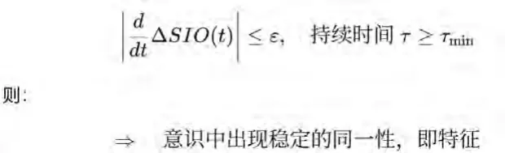
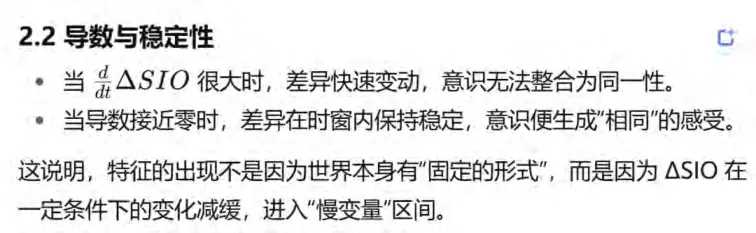
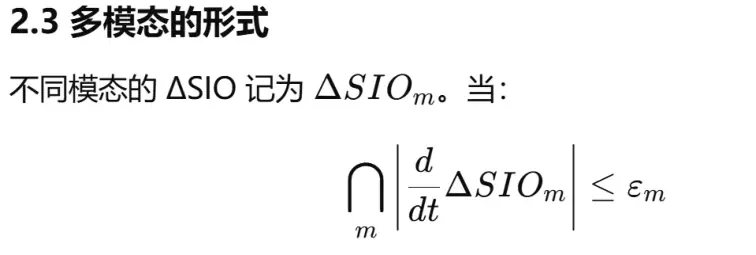
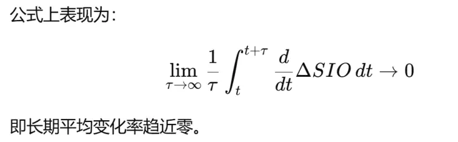
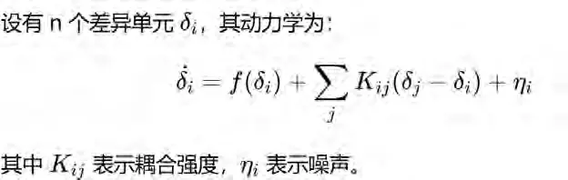
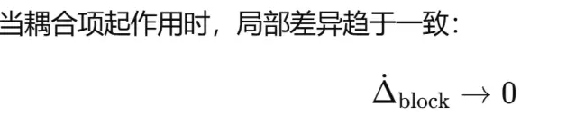
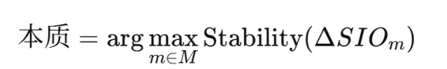

——特征律的本体论应用与发生学解构
摘要
亚里士多德的“质料–形式”（hylomorphism）学说，是西方哲学史中最具影响力的本体论之一。依此，实体由“质料（材料、潜在性）”与“形式（结构、实现性）”构成；形式被认定为实体的本质、不变与同一，质料则被降格为偶然、可变与附属。这一范式塑造了两千余年的哲学与科学，直至康德仍然维持着“现象–物自体”的二元裂缝。然而，在SIO本体论 与 WDS特征律 的框架下，这一二元结构的终极虚假性显露无遗。
本文提出：形式与质料并非实体的先天结构，而是 不同 SIO 模态下特征律运行所产生的意识特征。换言之，“形状/形式”是视觉SIO在特征律条件下涌现的慢变量，而“材料/质料”则是触觉SIO在特征律条件下涌现的慢变量。实体并不是“形式+质料”的二元组合，而是多种 SIO 在跨模态纠缠中生成的稳定整体。亚里士多德之所以把形式视为本质，是因为在希腊文明的视觉中心主义背景下，视觉SIO的特征律阈域狭窄、扰动修正刚度高、噪声低，因而更容易形成稳定不变的特征，被误读为“不可变的本质”；而触觉SIO的阈域宽松、噪声高、漂移大，因此产生的特征表现为可变，被降格为“质料”。这种文明偏置在长期经验、语言和制度中固化，最终塑造出“实体=形式+内容”的二元范畴。
本文的核心方法是通过 特征律 的重新定义来解构这一二元论。特征律指出：
d(ΔSIO)/dt≈0⇒意识特征（现象同一性）显现
即，当本体差异 ΔSIO 的变化在一定阈域内趋于稳定时，意识才会生成“同一性”。因此，特征的本质并非 SIO 或 ΔSIO 的内在同一性，而是 意识中的现象同一性, 更不是什么客观事物的内在属性，是发生学，不是发现学。
特征的发生机制遵循复杂性科学的三步：混沌 → 自组织 → 涌现。在混沌阶段，ΔSIO的差异碰撞无序，特征无法显现；在自组织阶段，差异之间出现局部抵消与慢变量；在涌现阶段，这些慢变量在更大尺度上稳定下来，最终在意识中形成“形状”或“材料”的同一性。由此可见，“形式”与“质料”并非先天二元，而是不同模态下特征律运行的现象产物。
进一步，本文通过跨学科的比较论证了亚里士多德二元论的倒塌：在神经科学中，视觉与触觉的慢变量生成路径不同；在语言学中，“形状词”与“材料词”的共现固化形成了语义的二元偏置；在复杂性科学中，实体同一性来自多模态慢变量的跨层级纠缠，而非形式与质料的加法。在此意义上，“实体”应被重新定义为：跨SIO慢变量的纠缠稳定，而非形式与内容的二元拼合。
本文的贡献在于：
1. 历史解构：揭示了亚里士多德形式–质料学说的发生学条件与文明偏置；
2. 本体论重建：以 SIO本体论与特征律为核心，提出实体的整体性解释；
3. 科学哲学意义：证明科学的建模使命并非寻找“形式/内容的对应”，而是通过数学与特征律在理念界重建 SIO 的模型；
4. 文明比较与未来哲学：展示了视觉中心主义在西方的主导，以及触觉、听觉中心主义在其他文明中的替代可能。
因此，亚里士多德的“形式与内容”二元本体论在 SIO 与特征律的框架下完成了它的 终极倒塌。所谓的“形式+质料”不是世界的本体结构，而是意识特征的文明性幻觉。真正的存在论必须承认：世界本体是 SIO 的集合，特征是意识的同一性，实体是跨 SIO 的纠缠涌现。
引言
一、亚里士多德的二元本体论：形式与质料的奠基
在西方哲学史的浩瀚传统中，亚里士多德的“质料–形式”学说（hylomorphism）是奠基性的结构。根据他的观点，世界上存在的一切具体事物（ousia，实体）都由两种原则性要素构成：其一是“质料”（hylē），即事物作为“可能存在”的材料基质；其二是“形式”（morphē 或 eidos），即事物作为“现实存在”的决定性结构。
亚里士多德的基本洞见在于，若没有质料，形式无法依托而存在；若没有形式，质料则是无定的潜在，无法成为具体的实体。因而，“实体”不是单一的“质料”，也不是单一的“形式”，而是两者的合成。但他同时坚持：在这一对要素中，形式居于主导地位，因为它赋予事物以“何者”的规定性（即本质，to ti ēn einai），决定了某物是什么。
举例而言，青铜块（质料）被塑造成一座雕像（形式），最终构成一件具体的雕塑（实体）。雕塑之所以是雕塑，而非一堆青铜，是因为有了形式的规定。因此，形式被视为实体的“本质”，而质料只是承载本质的基质。
这一二元本体论有两个直接后果：
1. 形式=本质、不变与同一；
2. 质料=偶然、可变与现象。
这套框架为西方哲学的“本质主义”与“形而上学”打下了千年不倒的根基。
二、千年哲学史的回响
（一）中世纪基督教的接受
当亚里士多德的著作通过阿拉伯哲学与经院学者重新进入欧洲时，他的“质料–形式”学说与基督教神学深度结合。托马斯·阿奎那在其《神学大全》中明确指出：上帝是纯形式（actus purus），无质料的本体；而受造物皆是质料与形式的复合体。这种改造使得形式具有了神学上的神圣性，而质料被贬为有限与不完美的象征。
于是，亚里士多德二元论不仅是哲学学说，更成为中世纪神学宇宙论的支柱。人类对世界的理解被牢牢地框定在“形式的不变性”与“质料的可变性”的范畴之中。
（二）近代科学的继承
文艺复兴与科学革命并未彻底推翻亚里士多德，而是继承了其形式–质料框架，只是换了一种解释语言。伽利略、笛卡尔与牛顿强调数学化自然，背后仍是“形式”的优先性：几何、方程、不变量被视为世界的“本质”；而物质粒子、力的状态、实验观测则被视为“质料”层面，即现象的偶然。
笛卡尔的“广延实在”与“思维实在”的二元论，正是亚里士多德形式–质料二元论的延伸：形式（结构、数学化的理性）被推崇为不可动摇的真理，而物质性内容只是依赖理性的被动基质。
（三）康德与现象/物自体
即便到康德，形式–质料二元论的幽灵依旧存在。康德区分了“物自体”（noumenon）与“现象”（phaenomenon），并强调我们只能认识现象，无法认识物自体。康德的“先验形式”（空间与时间，以及知性的范畴）是认识的决定性框架——本质上是“形式”的升级版本；而感性材料则是“质料”的延伸。
康德甚至直接使用了亚里士多德的术语：知性的“范畴”就是古代形式的现代表达。于是，尽管康德自认为批判了形而上学，但他依然延续了形式优先、质料依附的本体论格局。
三、直至今日的余波
（一）科学中的“形式崇拜”
今天的科学建模仍然延续了这一传统：我们认为自然的规律必须以“形式”的方式存在，如方程、不变量、守恒律。所谓“科学真理”，往往就是“找到事物的形式”。而材料、条件、实验数据则被视为次要，甚至被当作“噪声”。
（二）哲学与语言学中的二元痕迹
现代哲学仍然大量使用“形式–内容”的二元区分：
逻辑学：形式逻辑 vs. 经验内容；
美学：形式美 vs. 内容美；
语言学：语法形式 vs. 语义内容。
这些领域都隐含着一个亚里士多德遗产：形式更稳定、更普遍、更本质，而内容是附属的、可变的。
（三）社会与文化结构
在社会层面，形式–质料二元论也深刻塑造了文化思维。例如：
法律强调“形式合法性”高于“内容合理性”；
教育注重“形式化知识体系”，贬低经验性的、感性的“材料知识”；
美学常常把“结构”“比例”“形式感”作为审美的最高标准。
所有这些都表明，亚里士多德的形式–质料框架不仅是古代哲学的理论，而是一个至今仍在运作的认知结构，深深嵌入西方文明的思维方式。
四、二元论的局限与困境
然而，这一二元框架也带来了诸多困境：
1. 割裂本体与现象：当形式被看作本质，而质料被看作附属，现象总是被贬低为“不真实”，导致“本体不可知”的哲学困境。
2. 忽视生成性：形式被视为不变，而质料是变动的载体，这种分工忽视了“同一性”本身是如何生成的，即特征的发生学过程被遮蔽。
3. 文明偏置：视觉中心主义导致“形状/形式”被绝对化，而触觉、味觉等其他 SIO 模态的特征被边缘化。
4. 科学与人文的二裂：科学追求形式的规律性，人文学科强调经验的材料性，两者在二元框架下不断对立。
五、为何需要特征律与SIO本体论
面对这些困境，我们需要一种能够同时解释“形式的稳定”与“内容的变动”，并揭示其共同发生学机制的新框架。特征律 与 SIO本体论 正是在这一背景下提出的：
SIO本体论：实体不是“形式+质料”的二元拼合，而是主体（S）、互动（I）、客体（O）的整体复合体。
特征律：
d(ΔSIO)/dt≈0⇒意识特征显现
同时，ΔSIO不能为0.
特征不是本体自身的同一性，而是 ΔSIO 在稳定化时在意识中生成的同一性，即“现象的同一性”。
这意味着，形式与质料只是不同 SIO 模态下特征律运行的产物：视觉SIO生成“形式”，触觉SIO生成“质料”。所谓“实体=形式+质料”，不过是跨模态特征纠缠的固化幻觉，而非终极本体。
六、本文的使命
本文的研究使命，是从历史与哲学的深度出发，对亚里士多德的形式–质料二元论进行发生学解构，并展示其在 SIO+特征律 框架下的终极倒塌。具体目标包括：
1. 历史追溯：分析形式–质料二元论如何塑造了西方哲学与科学的基本结构。
2. 本体论批判：揭示“形式=不变”“质料=可变”的假设如何来自视觉中心主义与文明偏置。
3. 特征律应用：证明形式与质料并非实体的本质，而是不同 SIO 特征律下的现象特征。4. 复杂性解释：用混沌–自组织–涌现机制说明特征是如何生成的。
5. 未来哲学：提出“实体=跨SIO慢变量的纠缠稳定”的新定义，超越二元框架，回归整体存在论。
七、引言总结
亚里士多德的形式–质料二元论，作为哲学史最深远的遗产之一，至今仍支配着科学、哲学、语言与社会的思维模式。然而，它并不是世界的终极真理，而是一个文明偏置的产物。随着 SIO本体论 与 特征律 的提出，我们能够清楚地看见，这一二元框架的必然倒塌：形式与质料并非实体的本体构造，而是意识特征的不同投影。
在本文中，我们将沿着历史、哲学、科学和复杂性理论的路径，展示这一倒塌的必然逻辑，并提出新的存在论基础：世界本体是 SIO 的集合，特征是意识的同一性，实体是跨SIO 的纠缠涌现，实体是’发生学‘。
第一章
亚里士多德形式与质料二元本体论的原貌与逻辑
一、从柏拉图到亚里士多德：理念论的继承与修正
1.1 柏拉图的理念二元论
在亚里士多德之前，柏拉图已经提出了著名的“理念世界”与“感性世界”的二元论。柏拉图认为：感性世界的一切事物都是短暂、变易和不可靠的；而真正的本体存在于理念世界，即“形式”（eidos）的永恒不变结构。
例如，具体的圆总是有缺陷的，但“圆的理念”是完美的、不变的、先于经验存在的。因而，对柏拉图而言，形式才是真实，而感性材料只是“影子”和“摹仿”。
1.2 亚里士多德对理念论的批判
亚里士多德拒绝柏拉图的“二界论”。他认为，理念并不在另一个超验世界，而就在具体的事物之中。理念与感性事物不可分离，否则理念就无法解释具体事物的生成与运动。
但是，亚里士多德并未完全抛弃“形式”的概念，而是重新定义它：形式不再是超越的理念，而是 具体实体内部的规定性与实现性。同时，他引入“质料”的概念，来解释事物生成的潜在性。
二、质料与形式：亚里士多德的双重原则
2.1 质料（hylē）
质料是构成实体的“潜在基质”。它本身没有确定的形状或性质，而是“可以成为任何东西”。例如：
青铜是雕像的质料；
木材是桌子的质料；
面粉是面包的质料。
质料的特征在于“可变性”与“潜在性”。它可以接受不同的形式，从而成为不同的事物。但它本身没有“是什么”的规定性。
2.2 形式（morphē / eidos）
形式是赋予质料以确定性和“何者性”的要素。它规定某个东西是什么，而不是别的什么。例如：
雕像之所以是雕像，而不是青铜块，是因为它具有某种形式；
桌子之所以是桌子，而不是木材堆，是因为它的形式决定了它是“桌子”。
形式被亚里士多德提升为 实体的本质。它是不变的、普遍的、可重复的。
2.3 实体（ousia）的定义
因此，亚里士多德认为：
实体=质料+形式实体 = 质料 + 形式实体=质料+形式
质料是潜在，形式是现实。实体是二者的复合。
但是，在这一复合中，形式居于主导地位，因为它赋予了质料“现实性”。没有形式，质料就只是无意义的可能性。
三、质料–形式二元论的逻辑结构
3.1 潜能与现实
亚里士多德把“质料–形式”的区分与“潜能–现实”（dynamis–energeia）的区分结合在一起。
质料 = 潜能（可以成为）
形式 = 现实（已经是）
例如：
青铜有潜能成为雕像，但只有当它被塑造成某种形状时，它才“实际上是雕像”。
3.2 四因说与质料–形式
亚里士多德的“四因说”与“质料–形式”密切相关：
1. 质料因：事物由什么构成（木材、青铜等）；
2. 形式因：事物是什么（结构与定义）；
3. 动力因：是谁或什么导致了事物的生成（工匠、自然力）；
4. 目的因：事物为了什么而存在（功能与目的）。
在这四因中，形式因与目的因显然居于核心位置，因为它们解释了“为什么某物是它自己”。质料因与动力因则处于次要地位。
3.3 形式的优先性
亚里士多德在多个地方明确表示：形式是“第一实体”，是“不变的本质”。质料永远依赖形式而存在。
质料 = 可变、无定；
形式 = 不变、恒常。
因此，质料–形式的二元论，本质上是一种 形式本质论。
四、亚里士多德二元论的影响力逻辑
4.1 本质主义的根源
亚里士多德的形式优先论，成为西方哲学“本质主义”的源头。实体的“本质”就是它的形式，形式是决定性的、不变的。
这种思想导致了后世对“定义”“分类”“普遍性”的高度重视。整个西方逻辑学与科学分类学都深受其影响。
4.2 对科学的预设
近代科学虽然强调经验与实验，但背后的形而上学仍然是“形式主义”：
规律必须是普遍的、数学化的（即形式）；
数据只是支持或验证规律的材料（即质料）。
科学建模实际上延续了“形式支配质料”的思路。
五、二元论的内在困境
5.1 形式与质料的不可分问题
亚里士多德虽然认为实体是形式与质料的复合，但他始终无法清晰解释：这两者如何结合？
如果形式独立，它就像柏拉图的理念；
如果形式依赖于质料，它就失去作为“不变本质”的地位。
5.2 质料的模糊性
质料被定义为“无定的潜能”，但如果质料完全无定，它又如何能够“承载”形式？因此，质料的地位始终处于一种模糊与矛盾中。
5.3 本质与现象的二裂
把形式认定为本质、质料认定为偶然，导致了对现象世界的贬低。这为康德的“物自体–现象”裂缝埋下伏笔。
六、结论：亚里士多德二元论的遗产
亚里士多德的形式–质料二元论，以其“实体=质料+形式”的逻辑，塑造了西方哲学与科学的千年框架。它的优点是：
提供了一个同时解释“变化”与“恒常”的模型；
把“形式”确立为本质，保证了同一性与可定义性。
然而，它的局限也同样明显：
形式与质料的结合始终是一个谜；
质料概念含混，缺乏可操作性；
形式本质论导致对现象的贬低，形成哲学上的断裂。
这一框架之所以延续至今，是因为它满足了西方文明对“稳定性”“可定义性”的深刻需求。但在 SIO本体论 与 特征律 的新框架下，我们能够揭示：所谓“形式”与“质料”，其实都是不同模态 SIO 的意识特征产物，而非实体的终极本体。
第二章
亚里士多德二元论的逻辑缺陷与历史演化
一、形式与质料关系的逻辑悖论
1.1 实体“二元合成”的解释困境
亚里士多德的本体论认为：实体由“质料+形式”构成。然而这种合成始终存在逻辑难题。质料无定性：质料被定义为“纯潜在”，没有任何规定性。如果完全无定，它如何能成为形式的承载？
形式的依赖性：形式若必须依赖质料才能“现实化”，则形式也不再是独立不变的。
合成的不可解释性：若实体 = 质料+形式，那么两者之间的“合成关系”本身需要额外原则解释。但亚里士多德并未能清晰说明“合成”如何可能。
这导致二元论陷入一种逻辑循环：
没有质料，形式无法存在；
没有形式，质料无意义；
合成的机制无法说明。
1.2 潜能与现实的歧义
亚里士多德把质料与形式与“潜能–现实”对应：质料=潜能，形式=现实。但这对关系也存在内在矛盾：
潜能必须已经具有某种方向性，否则它无法“导向”特定现实。
如果潜能已经具有方向性，那它就已经包含“形式性”，而不是纯粹的质料。
因此，质料的“纯潜在”定义在逻辑上是不成立的。
1.3 本质与现象的撕裂
在亚里士多德的框架中，形式被等同于“本质”，质料被降为“偶然”。这导致：
真正的“知识”只关乎形式；
质料相关的特征（触觉、感官、经验）被贬低为“非本质”。
这种撕裂在后世导致严重的哲学问题：知识是否与现象世界割裂？现象是否永远无法触及本质？
二、历史演化：二元论的幽灵
2.1 中世纪的神学化
托马斯·阿奎那将亚里士多德的二元论引入神学，提出：
上帝=纯形式（actus purus），无质料。
受造物=质料+形式的复合。
结果：形式的优先性进一步被神圣化，质料成为有限性与堕落的象征。西方世界的价值体系因此被牢固建立在“形式神圣、质料低贱”的二元框架上。
2.2 近代科学的数学化
科学革命时期，形式–质料的语言转换为“数学–经验”的二元：
伽利略：自然书写在数学形式之中。
笛卡尔：几何（形式）是真实，感官经验（质料）是不可靠的。
牛顿：自然规律（微积分方程）是不变形式，实验数据是质料性的偶然支撑。
科学建模的基本逻辑仍然是“形式支配质料”。
2.3 康德的“现象–物自体”
康德批判形而上学，但实际上延续了亚里士多德的二元逻辑。
“先验形式”=空间、时间、范畴 → 是不变的结构。
“感性材料”=经验给予 → 是可变的质料。
“物自体”不可知 → 形式与质料裂缝的极端化。
康德因此将形式/质料二元论推向一个新的顶点：知识是可能的，因为我们拥有形式；但本体不可知，因为质料层面始终处于不可通达状态。
2.4 现象学与分析哲学中的残影
胡塞尔的“本质直观”仍然追求抓住“形式”，而贬低“偶然的经验材料”。
分析哲学中的“形式逻辑”与“经验内容”区分，继续体现了亚里士多德的遗产。
美学、语言学中的“形式与内容”二元结构，更是直系继承。
三、逻辑缺陷的放大效应
3.1 科学中的“形式崇拜”
科学方法论把“数学形式”视为真理，数据只是附属。结果是：科学被理解为“发现不变形式”的活动，而不是研究差异与生成的过程。
3.2 价值层面的偏置
形式被等同为“理性、逻辑、普遍性”；
质料被等同为“感性、偶然、个别性”。
这种偏置导致了理性与感性、普遍与个别、逻辑与经验之间的层级对立。
3.3 文化上的单模态霸权
亚里士多德的二元论根源于视觉SIO的主导地位。西方文明的“视觉中心主义”强化了形状、几何、比例的不变性，而忽视触觉、味觉、听觉等模态的发生学特征。这种单模态霸权进一步加剧了“形式=本质”的幻觉。
四、为何需要新的批判
4.1 特征的误读
二元论的最大逻辑错误在于：它把“意识中出现的稳定特征”误读为“实体的固有本质”。形式=视觉特征律下的稳定产物。
质料=触觉特征律下的稳定产物。
但亚里士多德误以为这是“实体的二元构造”。
4.2 特征律的澄清
特征律 指出：
d(ΔSIO)dt→0⇒意识特征显现
即：特征并不是本体的同一性，而是 ΔSIO 在意识中的稳定投影。
形式与质料都不是实体本体的先天要素，而是 不同模态下特征律运行的结果。
4.3 发生学解释：混沌–自组织–涌现
ΔSIO 最初处于混沌状态（快速变化）。
通过局部自组织，正/反差异抵消，生成慢变量。
慢变量触发特征律，在意识中涌现为“形式”或“质料”的特征。
由此，形式与质料的同一性是 现象学的发生学结果，而不是实体的形而上学本质。
五、过渡：从二元论到特征律的批判
通过以上逻辑与历史的分析，我们看到：
1. 亚里士多德的形式–质料二元论在逻辑上不可自洽；
2. 在历史演化中，这一框架被不断神化与放大，导致本体与现象的裂缝越来越严重；
3. 其核心问题在于把“意识特征”误读为“本体本质”。
因此，必须引入 SIO本体论 与 特征律，来揭示：
世界本体是 SIO 的整体；
形式与质料只是不同 SIO 模态下的特征；
特征是意识的同一性，而非实体的同一性。
在下一章中，我们将正式提出特征律的定义，并展示它如何把本体差异（ΔSIO）与意识现象（特征）连接起来，从而彻底解构亚里士多德的二元本体。
第三章
SIO本体论与特征律的提出：
超越亚里士多德的二元框架
一、引言：二元论的困境与新框架的必要性
在前两章中，我们揭示了亚里士多德形式–质料二元本体的逻辑缺陷及其历史演化。最根本的问题是：它把 意识层面的特征 当作 实体本体的结构。形式与质料并不是世界的终极要素，而是 不同感知模态下特征律运行的产物。
要彻底超越这一困境，就必须提出新的本体论框架，使之既能解释 本体如何存在，又能解释 现象如何生成。这一框架就是 SIO本体论，而其关键运作机制则是 特征律。
二、SIO本体论的基本原则
2.1 定义
SIO本体论主张：存在即SIO，而S，I，O则是SIO产生的三大特殊的意识特征：即主体意识，客体意识，互动意识，他们并非实在存在。三者不是独立先存的部分，而是 整体性的复合体。任何存在，都必须被理解为一个 SIO整体。
2.2 与二元论的区别
亚里士多德认为：实体 = 质料+形式。而在SIO本体论中：
实体 = SIO整体。
质料/形式只是某些SIO模态下的现象特征。
因此，SIO并不是二元拼合，也不是三元“零件”组装，而是一个动态复杂结构体，她不是S，I，O的某种’复合体‘，因为S，I，O是SIO的发生物。
2.3 差异（ΔSIO）的概念
SIO 本体的存在方式是动态的。主体、互动与客体之间不断发生变化，这些变化即 ΔSIO。
ΔSIO不是本体之外的“扰动”，而是本体存在的方式。
我们感知到的世界，不是静止的SIO，而是 ΔSIO 的运动与差异。
三、特征律的提出
3.1 定义
特征律：
d(ΔSIO)/dt≈0⟹意识特征显现（在ΔSIO不等于0，即必须有差异发生）
含义是：当 ΔSIO 的变化率在某一阈域内趋于稳定时，意识才会捕捉并生成一个 同一性，即“特征”。
3.2 三点澄清
1. 特征不是SIO的同一性：SIO是本体整体，不能被直接感知。
2. 特征不是ΔSIO的同一性：差异本身是不稳定的。
3. 特征是意识的同一性：它是 ΔSIO 在意识中的稳定化投影。
换言之，特征是 现象的同一性，不是本体的同一性。
3.3 发生机制
特征的发生遵循复杂性科学的三步：
1. 混沌：ΔSIO 高速无序变化，无法形成特征。
2. 自组织：差异之间发生抵消，生成局部慢变量。
3. 涌现：慢变量在宏观尺度稳定，意识将其固定为同一性，即“特征”。
四、SIO本体论与亚里士多德二元论的对比
4.1 存在的定义
亚里士多德：实体 = 质料+形式。
SIO本体论：存在 = SIO整体。
差异：二元拼合 vs. 三元整体。
4.2 稳定性的来源
亚里士多德：稳定性来自“形式”的本质不变。
SIO本体论：稳定性来自 ΔSIO 在特征律下的慢变量涌现。
差异：先天不变 vs. 发生生成。
4.3 本质与现象
亚里士多德：形式=本质，质料=现象。
SIO本体论：本质=跨SIO慢变量的纠缠稳定，现象=各模态特征的意识同一性。
差异：二元对立 vs. 多模态纠缠。
4.4 认识论意义
亚里士多德：知识=把握形式。
康德：知识=现象中的先验形式。
SIO本体论：知识=通过特征律把 ΔSIO 的慢变量模型化为理念模型。
差异：本质主义 vs. 建模论。
五、特征律在形式–质料问题上的应用
5.1 形式的再解释
“形式”并不是实体的先天本质，而是 视觉SIO 在特征律下的慢变量：边界、轮廓、几何不变。视觉因阈域小、刚度高、噪声低，更容易生成稳定特征，因此文明历史中被误认作“本质”。
5.2 质料的再解释
“质料”并不是实体的被动材料，而是 触觉SIO 在特征律下的慢变量：硬度、粗糙度、温度、湿度。触觉因阈域大、噪声高，特征更易变动，因此被降格为“偶然”。
六、从二元论到整体论的哲学飞跃
6.1 本体论层面
二元论：形式不变、质料可变。
SIO论：存在整体，差异运动，特征生成。
6.2 认识论层面
二元论：知识是对形式的直观或定义。
SIO论：知识是对 ΔSIO 的理念建模。
6.3 方法论层面
二元论：以形式/质料的分离解释世界。
SIO论：以 SIO整体和特征律的动态建模解释世界。
七、结论
通过 SIO本体论与特征律，我们能够彻底超越亚里士多德的二元框架。形式与质料并不是实体的终极构造，而是不同模态SIO特征律下的意识特征。实体的真实定义应是 跨SIO慢变量的纠缠稳定，而知识的使命是在理念界对这些慢变量进行模型化。
因此，亚里士多德的二元论，在新的本体论框架下，不仅被批判，而且被替代。世界不是“形式+质料”的拼合，而是 SIO的整体生成与特征的发生。
第四章
特征律的数学表述与意识论意义
一、引言：特征律的哲学定位
前几章我们指出，亚里士多德的“形式–质料”二元论在逻辑上难以自洽，根源在于它把 意识中出现的稳定特征 误读为 实体的固有本质。要超越这种困境，就必须揭示 特征是如何生成的，即特征的发生学机制。
特征律 正是在这种背景下提出的。它不仅是一个本体–现象之间的桥梁公式，更是理解科学知识、意识现象、社会结构生成的关键原则。它表明：
当 ΔSIO 的变化率在一定时窗内趋于稳定时，意识才会生成“同一性”，即特征。
因此，特征不是本体的属性，而是 意识的同一性。它是 ΔSIO 的动态稳定性在意识中的投影。
二、数学表述：从 ΔSIO 到特征



时，意识不仅在单一模态中产生特征，还会跨模态整合，即多模态特征纠缠发生，生成“实体感”。这就是我们感知“桌子”“苹果”的基础。
2.4 复杂性机制：混沌–自组织–涌现
混沌阶段：∣d(ΔSIO)/dt∣ 大，特征未能形成。
自组织阶段：部分 ΔSIO 抵消，局部慢变量出现。
涌现阶段：慢变量持续稳定，意识锁定特征，符号化为“形状”“材料”“声音”等。

三、现象学分析：特征=意识的同一性
3.1 本体的不可见性
3.2 意识的三性与特征
Firstness：质性，如“红”“甜”；
Secondness：事实性，如“被碰到”“被阻挡”；
Thirdness：关系性，如“在上方”“属于”；
当 ΔSIO 稳定时，这三性被意识整合为“同一性”。于是“红”作为颜色特征，“甜”作为味觉特征，“桌子”作为空间–关系特征得以出现。
3.3 特征的本质澄清
不是 SIO 的本质：本体整体不能被直接捕捉。
不是 ΔSIO 的本质：差异本身不稳定。
而是 意识的同一性：现象在意识中获得稳定的“相同感”。
3.4 语言的符号化
当特征出现后，意识会通过语言将其符号化：
红、甜、硬、圆…
正是这种符号化，使特征进入知识体系。
四、跨学科支撑
4.1 复杂性科学
物理学：Rayleigh–Bénard 对流中，流体差异在高 Rayleigh 数下自组织为稳定卷帘，对应“特征”出现。
数学：动力系统中的慢变量与吸引子，体现了 ΔSIO 的稳定化机制。
4.2 神经科学
视觉皮层：当视网膜输入的变化在小范围内趋于稳定，V1 皮层细胞整合为“边缘”“形状”。
听觉皮层：当声音频率的差异保持稳定，意识听到“音高”。
触觉皮层：重复触摸同一物体，变化率小，形成“硬度”“粗糙度”的稳定感。
4.3 语言学
音位学：连续声音流在变化率低的区间内被整合为音位特征。
语法：稳定的语言结构（词序、屈折）通过长期自组织成为语法规则。
4.4 经济学
市场模式：价格差异（ΔSIO）在某一阈域内稳定，被称为“均衡”。
制度形成：交易习惯在长期稳定中自组织为“制度性特征”。
这些例子表明，特征律不仅是哲学命题，也是跨学科的普遍规律。
五、结论：特征律作为新本体论的基石
通过数学公式、现象学分析与跨学科支撑，我们可以清楚地看到：
1. 特征的本质：不是本体的属性，而是意识的同一性。
2. 特征的发生：由 ΔSIO 经混沌–自组织–涌现稳定化生成。
3. 特征律的地位：它是本体与现象之间的桥梁，既解释了“形式”的来源，也解释了“质料”的生成。
因此，亚里士多德的形式–质料二元论在这里被彻底替代：
“形式”=视觉SIO的特征；
“质料”=触觉SIO的特征；
“实体”=跨SIO慢变量的纠缠稳定。
特征律 不仅揭示了现象如何出现，更为哲学与科学提供了统一的解释框架。
第五章
视觉SIO与触觉SIO的差异：特征律运行与“形式即本质”的文明偏置
一、引言：模态差异与哲学偏置
人类的认知并不是单一模态的，而是多模态SIO（视觉、触觉、听觉、味觉、嗅觉等）的整体互动。然而，历史上某些模态被文明赋予“主导地位”。在希腊哲学传统中，视觉被确立为主导的SIO，而触觉与其他感官则被贬为次要。
这种“视觉中心主义”不仅是文化偏好，更有深刻的发生学基础：视觉与触觉的特征律运行机制存在差异。这种差异最终导致“形状/形式”被误读为“本质”，而“材料/质料”被降格为“偶然”。
二、视觉SIO的特征律运行
2.1 特征律在视觉中的公式化
视觉SIO的差异（ΔSIO_V）主要体现在光强、颜色、边界、轮廓等的变化。
公式：
时，意识中就会出现稳定的视觉特征，如“形状”“轮廓”“颜色”。
2.2 视觉特征的稳定性
阈域窄（ε小）：视觉对细微差异极其敏感。
刚度高（恢复快）：眼动、微小扰动很快被整合回稳定形状。
噪声低：视觉信号相对清晰，稳定度高。
结果：视觉特征容易生成并保持长期稳定 → “形状”被意识感知为“不变”。
2.3 视觉与几何化
视觉特征具有几何结构：边界、对称、比例。它们天然适合被数学化与抽象化。因而在哲学史中，视觉SIO的产物“形式”容易被理解为“普遍性”“本质”。
三、触觉SIO的特征律运行
3.1 特征律在触觉中的公式化
触觉SIO的差异（ΔSIO_T）主要体现在压力、温度、湿度、粗糙度、弹性等方面。
公式：
ΔSIOT(t)=h( 力学作用, 摩擦, 温度传导)\Delta SIO_T(t) = h(\text{ 力学作用},\\text{摩擦},\ \text{温度传导})ΔSIOT(t)=h(力学作用, 摩擦, 温度传导)
时，意识才会感知到稳定的触觉特征，如“硬度”“光滑”“温热”。
3.2 触觉特征的稳定性
阈域宽（ε大）：触觉对差异的容忍度大，不敏感于细微变化。
刚度低（恢复慢）：触觉感知常需持续接触，特征生成时间长。
噪声高：温度、湿度、外力条件不稳定，容易扰动特征。
结果：触觉特征相对不稳定，意识中更容易表现为“变动”“偶然”。
3.3 触觉与情境性
触觉特征依赖具体情境：同一材料在不同温度、湿度、压力下表现不同。因而触觉产物更倾向于被理解为“偶然性”“材料性”，难以被抽象化为普遍形式。
四、视觉与触觉的差异对比
| 特征律参数 | 视觉SIO | 触觉SIO | 哲学后果 |
|---|---|---|---|
| 阈域 ε | 小（高敏感） | 大（低敏感） | 视觉产物看似稳定；触觉产物显得多变 |
| 恢复刚度κ | 高（快速回稳） | 低（恢复缓慢） | 视觉特征长期保持；触觉特征易波动 |
| 噪声 σ | 低 | 高 | 视觉=“不变”，触觉=“偶然” |
| 结构性 | 几何/对称/比例 | 力学/质地/温度 | 视觉适合抽象；触觉依赖情境 |
| 特征律参数 | 视觉SIO | 触觉SIO | 哲学后果 |
|---|---|---|---|
| 符号化 | 容易被语言捕捉 | 难以被抽象语言固定 | 形式更易被定义为“本质” |
五、视觉中心主义的文明偏置
5.1 希腊哲学的视觉化传统
希腊哲学强调“看见”的真理：theoria（观照）即知识。
数学、几何被视为最高知识形式。
“看得见的形状”被等同为“本质”。
5.2 亚里士多德的继承
把视觉SIO的产物——形式，提升为实体的本质。
把触觉SIO的产物——质料，贬为偶然、可变。
二元论由此确立：形式=本质，质料=现象。
5.3 文明的制度化
科学：规律=数学形式；数据=材料。
美学：形式美高于材料美。
法律：形式合法性高于实质合理性。
这一切，都是视觉中心主义的文明性后果。
六、发生学解释：“形式即本质”的幻觉
通过特征律，我们可以看到，“形式即本质”的哲学观念其实是一种幻觉，根源在于视觉SIO的特征律特性。
6.1 特征律的动态条件
视觉 ΔSIO：快速趋稳 → 导数接近0 → 特征律迅速触发。
触觉 ΔSIO：波动持久 → 导数大 → 特征律触发慢。
6.2 幻觉的形成
在意识经验中，视觉特征长期稳定 → 被误认作“不变的本质”。
触觉特征不稳定 → 被贬为“偶然的质料”。
二者的跨模态纠缠 → 被固化为“实体=形式+质料”。
6.3 哲学的误读
亚里士多德误以为这是实体的本体结构，而没有意识到这是不同SIO模态特征律运行的差异性导致的。
七、结论：视觉–触觉差异与二元论的终极倒塌
视觉SIO与触觉SIO在特征律运行上的差异，构成了“形式即本质”的发生学根源。视觉产物的稳定性与几何性，使其被文明赋予“本质”地位；触觉产物的情境性与波动性，使其被降格为“偶然”。
然而，在 SIO本体论+特征律 的框架下，我们能看清：
形式与质料不是实体的二元结构，而是不同模态下的意识特征。
实体的本质不是形式，而是 跨SIO慢变量的纠缠稳定。
亚里士多德二元论的基础，在这里完成了它的发生学解构。
第六章
纠缠与固化机制：
视觉与触觉特征的双发生学与“实体二元论”的幻觉
一、引言：为什么“形式+质料”如此牢固？
亚里士多德的形式–质料二元论之所以具有千年生命力，并不仅仅因为它逻辑上简洁，而是因为它深深根植于人类最基本的感知经验。我们对世界的认知，往往同时依赖视觉与触觉两种主导模态：视觉提供形状、边界与几何结构，触觉提供重量、硬度与材料感。这两类感知在日常生活中几乎总是同时发生、彼此验证。
于是，视觉特征与触觉特征之间形成了一种 跨模态的长期纠缠。在这种纠缠中，“形状+材料”被反复同现，逐渐被意识固化为一个不可分的组合。这种固化，在哲学反思中便被误读为“实体本身的二元本体结构”，即“形式+质料”。
二、特征律与双发生学
2.1 特征律回顾
特征律指出：
d(ΔSIO)dt→0⇒意识特征显现
即：当某一模态下的差异在时窗内稳定时，意识就会生成同一性。
2.2 双发生学的定义
视觉发生学：当 ΔSIO_V 稳定 → 形状/形式特征显现。
触觉发生学：当 ΔSIO_T 稳定 → 材料/质料特征显现。
当两者 同时在时间窗内触发特征律，便会出现一个 跨模态的双发生学。
2.3 纠缠的起点
在现实经验中，几乎所有“物体”都是“形状”与“材料”的同步经验。例如：
桌子既“有形状”，又“有木头的硬度”；
苹果既“有圆形外观”，又“有果肉的触感与重量”。
视觉与触觉特征同时触发 → 意识自然把二者视为“一个东西的两个方面”。
三、纠缠的机制
3.1 神经机制：Hebbian联结
神经科学中，赫布法则指出：“一起发火的神经元会连线”。
当视觉特征（形状）与触觉特征（硬度）在经验中反复同时出现，二者的神经表征逐渐形成强耦合。
久而久之，大脑中出现一个跨模态吸引子，把视觉与触觉特征绑定为一个“整体物”。
3.2 语言机制：命名与范畴化
语言强化了这种绑定：
“桌子”同时指“矩形形状+木质材料”；
“苹果”同时指“圆形+果肉质地”。
语言作为符号系统，将这种跨模态的同现进一步固化，使得我们在思维中无法轻易拆分“形状”和“材料”。
3.3 文化机制：工艺与制度
社会文化进一步强化：
工匠的范畴化：雕刻、铸造总是“材料+形状”结合；
法律与度量：商品定义往往需要既指明“形状/规格”，又指明“材料/质地”；
美学评价：既强调“形式美”，又强调“材料之优劣”。
这种文化机制使跨模态纠缠从经验走向制度，最终沉淀为文明的认知惯性。
四、固化为“实体二元论”的幻觉
4.1 哲学的误读
当哲学反思这种经验时，往往误以为：
视觉特征（形式）= 不变的本质；
触觉特征（质料）= 可变的材料；
实体 = 形式 + 质料。
但实际上，这种“二元组合”只是 视觉与触觉特征长期同现的意识投影，而非实体本身的构造。
4.2 固化的条件
跨模态纠缠之所以会固化为“二元本体幻觉”，有三个条件：
1. 高同现频率：视觉与触觉几乎总是同时发生。
2. 长期驻留：二者的同步性跨越了大量经验情境。
3. 符号系统加固：语言与制度将这种同现固定为类别。
满足这三个条件，意识便将跨模态纠缠误读为实体的“固有结构”。
4.3 “实体=形式+质料”的历史化
亚里士多德的二元论，正是这一幻觉在哲学中的理论化表达。他没有看到特征律的运行机制，而是直接把视觉与触觉特征的纠缠经验提升为本体论原则。
五、复杂性科学的支撑
复杂性科学为我们提供了理解“纠缠与固化”的额外支撑：
5.1 混沌 → 自组织 → 涵盖模态
视觉与触觉差异在初始阶段各自混沌。
通过自组织，视觉生成“形状”慢变量，触觉生成“材料”慢变量。
二者长期耦合 → 在更高层级涌现出“物体实体”的跨模态吸引子。
5.2 固化的不可逆性
在复杂系统中，当多个子系统长期耦合，往往会形成“不可逆的宏观模式”。
视觉+触觉 → “形式+质料”的二元结构 → 宏观层面的稳定范畴。
哲学只是对此模式的再叙述，而非揭示了真实本体。
六、跨学科印证
6.1 神经科学
脑成像研究表明：
视觉区与触觉区在处理物体时呈现强同步化。
物体识别是多模态的：形状与材料在神经表征中被绑定。
6.2 语言学
语言中普遍存在“形式+材料”的命名模式：
“木桌”“石雕”“铁剑”。
形容词修饰结构（硬的苹果 vs. 圆的苹果）体现了二元组合的语言固化。
6.3 人类学
不同文明虽然有差异，但“形状+材料”的范畴化几乎普遍存在，只是主导模态不同（如中国手工文明更强调材料性，西方文明更强调形状性）。
七、哲学反思：如何打破幻觉
7.1 识别幻觉
我们必须认识到：“实体=形式+质料”只是 视觉与触觉SIO的双发生学纠缠的固化，而非实体的本体结构。
7.2 重新定义实体
在SIO本体论+特征律框架下：
形式=视觉特征律产物；
质料=触觉特征律产物；
实体=跨SIO慢变量的纠缠稳定。
7.3 方法学转向
科学与哲学不应再寻找“形式/质料”的二元构造，而应研究 跨模态特征如何通过特征律涌现并稳定。
八、结论
视觉与触觉特征在经验中长期同现，由神经、语言、文化机制强化，最终在哲学上被固化为“实体=形式+质料”的二元本体论。这一结构并非世界的真实本体，而是 跨SIO特征律运行的产物，被误认作本质。
特征律揭示了真相：
特征=意识的同一性；
双发生学=模态特征的纠缠稳定；
“形式–质料”二元论=哲学对这一纠缠的误读。
因此，亚里士多德的二元论最终显露为一种 哲学幻觉，在新的整体本体论框架下，它的终极倒塌不可避免。
第七章
复杂性科学与差异稳定性：混沌–自组织–涌现机制对二元论的解释
一、引言：特征律与复杂性科学的对接
我们已经提出，特征律是连接 SIO 本体差异（ΔSIO）与意识特征的桥梁：
d(ΔSIO)dt≈0⇒意识特征（现象同一性）显现
但这一命题还需要科学的支撑：为什么 ΔSIO 会进入稳定状态？为什么稳定状态会在意识中触发“同一性”？
复杂性科学为我们提供了答案。它揭示了三个基本机制：
1. 混沌：系统初始处于高速无序变化。
2. 自组织：局部差异通过耦合与抵消生成慢变量。
3. 涌现：慢变量在更大尺度上稳定，成为全局特征。
通过这三步，我们可以理解为什么在日常经验中，视觉与触觉的特征会长期纠缠，并在哲学反思中被固化为“形式+质料”的二元论。
二、混沌：差异的初始状态
2.1 混沌的定义
在复杂性科学中，混沌指的是一种对初始条件极度敏感、表现为高度无序但又内含确定规律的动力学状态。
对于 ΔSIO 而言，混沌阶段就是：
差异的变化率 d（ΔSIO）/dt 大( 指绝对值大）；
符号频繁翻转（正向、反向不断切换）；
局部不稳定，无同一性可供意识捕捉。
2.2 混沌在感知中的体现
婴儿早期的视觉输入，眼动剧烈、图像不断抖动 → 混沌状态。
触觉在复杂环境下（风吹、震动、温度不稳） → 感知漂移。
在此阶段，意识中没有稳定特征，只有“流动的杂乱感”。
2.3 二元论的萌芽
亚里士多德敏锐地看到：混沌中的差异必须被某种“形式”组织起来，否则无法成为知识。但他没有意识到这种“组织”来自 自组织机制，而误以为“形式”是实体的先天本质。
三、自组织：差异的局部协同
3.1 自组织的定义
自组织是指：一个开放系统在没有外部控制的情况下，通过内部相互作用，自发产生有序结构。
对于 ΔSIO，这意味着：
正向与反向加速差异相互抵消；
局部区域出现“慢变量”，变化率趋于零；
意识在这些区域中开始感知到“同一性”。
3.2 数学机制


即出现“块变量”，成为慢变量。
3.3 感知实例
视觉：局部边缘线段通过“共线性”自组织成稳定的轮廓。
触觉：连续接触在摩擦作用下趋于稳定，产生“光滑/粗糙”的稳定感。
听觉：重复的节奏被感知为“拍子”。
3.4 二元论的加深
亚里士多德看到：局部稳定特征反复出现，说明有“形式”的存在。他没有意识到这是自组织的结果，而把它解释为“形式=不变的本质”。
四、涌现：整体次序的形成
4.1 涌现的定义
涌现是指：系统在更高层级出现了原本不存在的新结构。它不是简单的叠加，而是新的模式的出现。
对于 ΔSIO，这意味着：
多个局部慢变量在更大尺度上整合；
出现全局特征，如“形状”“材料”“物体”；
意识在此时生成实体感。
4.2 典型案例
物理学：水分子混沌碰撞 → 对流胞 → 宏观涌现“热对流”特征。
生物学：神经元混沌发放 → 网络自组织 → 意识模式涌现。
经济学：交易个体混乱决策 → 局部习惯 → 制度与均衡涌现。
4.3 在感知中的体现
视觉：从局部边缘涌现出全局“形状”。
触觉：从局部接触涌现出整体“硬度/质地”。
多模态：视觉形状与触觉质感同时涌现，成为“实体”。
4.4 二元论的最终固化
当视觉和触觉的涌现长期同时发生时，意识就会把“形状（形式）+材料（质料）”固定为一个组合，进而在哲学中固化为“实体=形式+质料”。
五、复杂性科学对二元论的解构
5.1 特征律的再确认
复杂性科学表明：所有特征的出现，都需要 ΔSIO 的变化率进入慢变量区间。
视觉 → 形式特征。
触觉 → 质料特征。
多模态 → 实体感。
这证明：形式与质料都是 特征律的结果，而不是实体的本体要素。
5.2 二元论的发生学解释
亚里士多德误以为“形式不变”是先天的本质。
实际上，不变性是 ΔSIO 经混沌–自组织–涌现后在意识中的投影。
二元论不过是对这一发生过程的哲学误读。
5.3 科学的验证途径
神经科学：视觉皮层的边缘检测与触觉皮层的质感编码，都符合“慢变量”生成的逻辑。
复杂系统实验：Rayleigh–Bénard 对流、群体智能、市场均衡，都显示“差异稳定性”是涌现的产物。
语言学：音位、语法、范畴，也都是“符号化特征”，源于差异的稳定化。
六、结论：二元论的终极倒塌
通过复杂性科学的解释，我们可以得出以下结论：
1. 差异的初始状态是混沌，没有特征。
2. 自组织生成慢变量，局部特征出现。
3. 涌现整合成全局模式，实体感出现。
4. 亚里士多德把视觉+触觉的涌现误读为实体的二元本体。
因此，形式与质料的二元论并不是实体的真实结构，而是 复杂系统中模态特征律运行的产物。
在新的 SIO+特征律框架下，我们看到：
形式=视觉特征；
质料=触觉特征；
实体=跨SIO慢变量的纠缠稳定。
这意味着，亚里士多德二元论在复杂性科学的光照下，完成了它的 终极倒塌。
第八章
一与多的哲学生成：视觉的不变与触觉的可变
一、引言：哲学中永恒的“一与多”问题
从古希腊哲学伊始，“一与多”就是核心问题之一：
巴门尼德强调“存在是一”，一切变化与多样只是幻象。
赫拉克利特则主张“万物流变”，多与差异才是真实。
柏拉图以“理念”为“一”，以“感性世界”为多。
亚里士多德则通过“形式–质料”来解释：形式代表不变的一，质料代表可变的多。
为何这种“一与多”的区分如此根深蒂固？本文将表明：根源在于 不同模态SIO的特征律运行机制。视觉特征律偏向于生成稳定同一性（不变性），因此被哲学认定为“一”；触觉特征律偏向于生成多变的材料感，因此被哲学认定为“多”。
二、特征律视角下的“一与多”
2.1 特征律公式回顾
∣dΔSIO/dt∣≤ε,τ≥τmin⇒意识特征显现
当 ΔSIO 在时窗内趋于稳定时，意识便感知到“同一性”。
2.2 模态差异
视觉SIO：阈域 ε 小、刚度高、噪声低 → 特征极易稳定化。结果=不变性 → “一”。触觉SIO：阈域 ε 大、刚度低、噪声高 → 特征波动频繁。结果=可变性 → “多”。
2.3 意识映射
稳定性被意识经验为“同一性”“永恒性” → 一。
波动性被意识经验为“多样性”“流变性” → 多。
因此，“一与多”并不是本体的属性，而是 模态特征律差异的意识投影。
三、视觉的不变性与“一”的哲学地位
3.1 视觉特征的稳定性
视觉特征容易在短时间内趋于稳定，例如：
边缘整合 → 形状；
轮廓保持 → 物体；
对称与比例 → 几何结构。
这些特征一旦生成，便长期保持一致。
3.2 哲学史中的视觉中心主义
巴门尼德：“存在是一，不变”。他的哲学灵感正是视觉经验的稳定性。
柏拉图：“理念是永恒的一”。理念本质上是视觉形式的抽象。
亚里士多德：“形式是实体的本质”。视觉SIO的稳定特征直接被哲学升格为“本质”。
3.3 “一”的误读
“一”并非存在本身的绝对属性，而是 视觉特征律运行中慢变量的意识效果。哲学误以为“一”是本体的不变，实际上它是 视觉的稳定产物。
四、触觉的可变性与“多”的哲学地位
4.1 触觉特征的波动性
触觉经验常常表现为多样：
温度随环境而变。
湿度随接触条件而变。
材料硬度随外力强度而变。
即使同一物体，在不同条件下触觉特征也会差异巨大。
4.2 哲学中的“质料即多”
亚里士多德认为：质料本身是“纯潜能”，可以成为任何东西。
这种“无限可能”就是“多”的来源。
哲学因此把触觉经验的多样性抽象为“质料=多”。
4.3 “多”的误读
“多”并不是存在本身的无限分裂，而是 触觉SIO特征律运行中高噪声与广阈域的经验效果。哲学误以为“多”是质料的先天属性，实际上它是 触觉的不稳定产物。
五、“一与多”的跨模态纠缠
5.1 同现经验
现实经验中，视觉与触觉往往同时发生：
看见一张桌子，同时摸到它的硬度。
看见一个苹果，同时摸到它的光滑。
5.2 哲学的二元化
当视觉经验提供“一”，触觉经验提供“多”，二者的纠缠经验就被哲学固化为：
实体=形式（一）+质料（多）。
本质=不变；现象=可变。
5.3 幻觉的形成
哲学误以为这种“视觉的一+触觉的多”是实体的本体结构，而忽略了这是 不同SIO特征律运行的模态投影。
六、复杂性科学解释“一与多”
6.1 动态系统中的慢变量与快变量
视觉特征对应 慢变量 → 长时间保持 → “一”。
触觉特征对应 快变量 → 快速波动 → “多”。
6.2 多层次耦合
在复杂系统中，慢变量与快变量的耦合往往被误解为“本质与现象”的二分。但实际上，这是 动力学分层的自然产物。
6.3 哲学的误读
“一与多”的问题不是本体之谜，而是 慢变量与快变量的意识效应。
七、跨学科印证
7.1 神经科学
视觉皮层对稳定边缘的响应强 → 形成“一”。
触觉皮层对环境波动的敏感 → 形成“多”。
7.2 语言学
语言中“形状词”常用来指代本质（圆形、方形）。
“材料词”常用来指代偶然（木、铁、水）。
7.3 经济学类比
宏观经济的长期趋势（慢变量）被理解为“规律” → 一。
微观市场的短期波动（快变量）被理解为“现象” → 多。
八、结论：一与多的哲学生成
通过特征律与复杂性科学，我们可以揭示：
“一”来自视觉SIO特征律下的慢变量 → 稳定性。
“多”来自触觉SIO特征律下的快变量 → 波动性。
“一与多”不是存在的形而上本质，而是 不同模态SIO差异稳定性投影的意识效果。
亚里士多德把这种跨模态经验固化为“实体=形式+质料”，进而衍生出“本质=一、现象=多”的哲学大命题。
因此，“一与多”的哲学问题，其实是 感知模态的特征律差异 所生成的意识幻觉。在 SIO本体论框架下，这一幻觉被揭穿：世界本体不是“一”或“多”，而是 SIO整体的差异网络；“一与多”只是我们在不同模态中对 ΔSIO 稳定性差异的投影。
第九章
反亚里士多德情境：本质变成材料
一、引言：哲学不是普遍真理，而是模态偏置的产物
亚里士多德的“实体=形式+质料”学说，实际上是基于 视觉SIO为主导 的文明经验：
视觉特征律下，形状（形式）极易稳定 → 被认定为不变本质。
触觉特征律下，材料特征相对不稳定 → 被认定为偶然质料。
然而，如果主导模态改变，例如视觉退居次要，触觉占据核心，那么哲学对“实体”的界定也会随之改变：此时 材料特征会被认定为本质，而形式变成了可变的附属。
这就是本文所称的 “反亚里士多德情境”。
二、触觉主导下的特征律运行
2.2 触觉特征的稳定性机制
当个体反复依赖触觉来辨认对象，触觉特征律会通过经验训练，降低噪声 σ，提升刚度 κ。
在长期的生活与劳动实践中，“硬/软”“冷/热”“湿/干”就成为稳定不变的“材料本质”。
2.3 触觉 SIO 的稳固优势
主动性：视觉是被动接收光信号，触觉则可以通过主动探索（抓握、按压）来稳定差异。
交互性：触觉直接涉及物体的力学结构，属于强互动SIO，更贴近本体差异。
训练性：盲人、工匠、厨师等，通过大量实践，将触觉特征律的阈值缩小，使材料感高度稳定。
结果：在触觉主导下，“材料”比“形状”更稳定、更核心。
三、反亚里士多德的个体案例
3.1 盲人经验
盲人无法依赖视觉来捕捉形状，只能通过触觉、听觉与嗅觉来建构世界。
“硬度”“重量”“质感”成为其最可靠的本质特征。
形状是通过触觉探索而间接获得的，往往更模糊。
因此，对盲人而言，“本质”不在形式，而在材料。
3.2 工匠与厨师
木工：辨别木材的“硬度”“密度”比形状更关键。
厨师：辨认面团的“筋道”“湿度”才是烹饪的本质，形状只是外在可变。
在这些情境中，材料特征稳定决定了“实体是什么”，形状只是偶然。
3.3 技术哲学的反例
在一些技术领域，如药学与冶金，形状不重要，真正的“本质”是材料的化学性质。这里，触觉与实验感官构成了知识的锚点。
四、文明层面的反亚里士多德
4.1 中国文明的“材–器”哲学
中国古代更重视“材质”与“工艺”，例如《考工记》中强调木材、金属、水土的材料性。
实体被理解为“材+工艺+器用”的整体，而非“形式+质料”。
在这种文化中，“质料”本身就是“本质”。
4.2 印度文明的“声即本体”
印度哲学强调语言与声音，听觉SIO占优。
对其而言，“本质”不是视觉的形状，也不是触觉的材料，而是“音声”的稳定特征（真言、咒语）。
这也是另一种“反亚里士多德”，说明“形式为本质”只是文明偏置。
五、特征律解释“反亚里士多德”
5.1 本质=最稳定特征
根据特征律，本质并非事物先天的“形相”，
而是 在不同模态中最稳定的特征。

在视觉中心主义中：视觉特征最稳定 → 形式=本质。
在触觉中心主义中：触觉特征最稳定 → 材料=本质。
5.2 “反亚里士多德”的必然性
当视觉SIO退居次要，触觉特征律被优化，噪声降低、刚度提升时，触觉的慢变量更稳定 → 本质转向材料。
5.3 哲学误读的纠正
亚里士多德把“形式=本质”视为普遍真理，但特征律表明：这只是视觉主导时的偏置。在触觉主导时，真理将倒转。
六、复杂性科学印证
6.1 慢变量与快变量的转换
在视觉中心主义中：视觉=慢变量（稳定），触觉=快变量（波动）。
在触觉中心主义中：触觉=慢变量（稳定），视觉=快变量（波动）。
6.2 动态系统中的“主导模态”
在复杂系统中，决定宏观模式的是“最稳定的慢变量”。哲学把它误认为“实体的本质”。但实际上，它只是 系统中最稳定的模态特征。
七、跨学科支撑
7.1 神经科学
盲人触觉皮层重塑，稳定性显著提升。
fMRI 显示：盲人以触觉代替视觉进行“本质识别”。
7.2 语言学
中文里“木头性”“铁质性”常用于定义实体的本质；
英文里更强调“形状”定义（circle, square）。
语言印证了文明间模态主导的不同。
7.3 经济学
工业时代：材料科学取代形状哲学，钢铁、塑料的“材质属性”成为实体定义的关键。技术发展印证了“本质可能等于材料”。
八、结论：反亚里士多德的哲学
当触觉SIO占优、视觉退居次要时，亚里士多德的“形式为本质”就会被颠倒，出现“材料为本质”的哲学观。这表明：
1. 本质不是先天地码，而是特征律运行下最稳定的模态特征。
2. 亚里士多德的二元论是偏置的幻觉，在不同文明与个体经验中可被彻底翻转。
3. 反亚里士多德情境 揭示了哲学真理的发生学：所谓“实体本质”，其实是模态差异稳定性的投影。
因此，实体的本质不是形式，也不是材料，而是 跨SIO慢变量的纠缠稳定。视觉或触觉只是其中一个模态，因其特征律稳定性而被暂时误读为“本质”。
第十章
科学哲学的重建：SIO建模论
一、引言：科学与形式主义的陷阱
自古希腊以来，西方科学传统深受柏拉图理念论与亚里士多德形式论的影响。科学被理解为：
发现形式：寻找自然的几何结构、比例、规律。
忽视材料：实验数据、个别经验被视为“质料”，只是为形式提供支撑。
这种“形式=规律”的科学观，在近代通过伽利略、笛卡尔、牛顿而制度化，最终导致科学被定义为 寻找不变规律的学问。
然而，这种科学哲学有两大局限：
1. 它误以为规律（形式）是真理，而现象（质料）只是偶然。
2. 它忽视了规律自身的生成机制，即 规律如何从差异中涌现。
SIO本体论与特征律 提供了一条新的道路：科学的真正任务不是寻找“形式=规律”，而是 通过特征律建模跨SIO慢变量，从而在理念界重建本体的动态结构。
二、特征律与科学的对象
2.1 特征律回顾
d(ΔSIO)dt→0⇒意识特征显现
特征不是实体的固有本质，而是 ΔSIO 稳定化时在意识中生成的同一性。
2.2 科学研究的真正对象
科学不是研究“实体的本质”（形式），而是研究 ΔSIO 稳定化生成的特征网络。
换言之，科学研究的对象不是 先天形式，而是 跨SIO慢变量。
2.3 知识的本质
知识不是“发现”既存的规律，而是 通过特征律建模 ΔSIO 的慢变量，进而构建理念模型。
三、科学的发生学：从现象到建模
3.1 现象的起点
我们直接感知的只是 ΔSIO 的特征产物：
视觉 → 形状、颜色。
触觉 → 材料感。
听觉 → 音高、节奏。
这些都是意识特征，而非本体。
3.2 符号化与变量化
当特征被语言、符号化 → 变量。
“红度”“甜度”“温度”“重量”。
变量不是实体的本质，而是 意识特征的量化表征。
3.3 建立方程
科学用变量之间的关系表达 ΔSIO 的动态。
微分方程：描述变量的变化率关系。
统计模型：描述变量的概率关系。
系统论模型：描述变量的网络关系。
3.4 建模的实质
科学建模的实质是：
{意识特征}⟶{变量}⟶{方程/模型}
其本质是：在理念界重建 ΔSIO 的慢变量动态。
四、SIO建模论 vs. 形式主义科学
4.1 形式主义科学的基本预设
世界有先天的“形式”，科学的任务是发现这些形式。
真理=规律（普遍性方程）。
现象=偶然噪声。
4.2 SIO建模论的立场
世界的本体是 SIO，不是形式。
规律不是先天的，而是 ΔSIO 稳定化后特征的理念建模。
真理不是不变形式，而是 跨SIO慢变量的建模有效性。
4.3 对比表
| 形式主义科学 | SIO建模论 | |
|---|---|---|
| 本体 | 形式（几何/规律） | SIO整体 |
| 现象 | 质料/偶然 | 特征律下的意识特征 |
| 知识 | 把握不变规律 | 建模跨SIO慢变量 |
| 方法 | 数学发现“形式” | 特征律+变量化+建模 |
| 真理 | 规律与本体对应 | 模型与 ΔSIO 稳定性同构 |
五、案例分析：科学建模的SIO重释
5.1 物理学：牛顿力学
形式主义解释：牛顿发现了自然的“形式”（F=ma）。
SIO建模解释：
实验收集到运动的特征（位置、速度）。
变量化为 x(t), v(t)。
建模为微分方程。
方程不是自然的本质，而是 ΔSIO（运动互动）稳定特征的理念模型。
5.2 生物学：达尔文进化论
形式主义解释：进化规律是自然的“形式”。
SIO建模解释：
物种差异（ΔSIO）在长期稳定环境中显现。
特征律提取出“适应性”“遗传性”慢变量。
建模为自然选择理论。
5.3 经济学：市场均衡
形式主义解释：市场遵循均衡规律。
SIO建模解释：
个体交易差异（ΔSIO） → 价格波动。
在特定条件下波动趋稳（导数≈0）。
意识将此锁定为“均衡”特征。
建模为供需曲线。
六、特征律与科学预测
6.1 预测的根源
预测不是“发现形式”，而是 利用慢变量的稳定性。
若 ΔSIO 已进入慢变量区间，未来走势可预测。
若 ΔSIO 高度混沌，预测不可行。
6.2 科学与控制
科学预测与技术控制，本质上是 通过操控 ΔSIO 条件，延长或缩短慢变量的稳定区间。
6.3 不同层次的预测
微观混沌 → 预测困难。
宏观慢变量 → 预测可能。
科学的有效性来自于 多尺度建模。
七、科学哲学的重建
7.1 真理观的转变
形式主义：真理=本质与规律。
SIO建模论：真理=模型与 ΔSIO 稳定性的同构。
7.2 科学使命的转变
形式主义：科学寻找不变的形式。
SIO建模论：科学建模跨SIO慢变量，为我们提供对本体动态的间接认识。
7.3 哲学意义
科学不是“发现形式”，而是“生成模型”。
科学不是“揭示真理”，而是“构造理念”。
科学与艺术、宗教的边界因此被重新定义：它们都是 SIO 的理念建模，只是建模方式不同。
八、结论
科学的真正任务不是寻找“形式=规律”，而是 通过特征律对跨SIO慢变量进行建模。
形式主义科学误把视觉特征律的稳定产物当作自然的本质。
SIO建模论 揭示：所有科学模型都是 ΔSIO 在意识中的投影，经由变量化与方程化的理念重构。
因此，科学知识不是“发现”世界的形式，而是 建模世界的慢变量。
这就是科学哲学的真正重建。
第十一章
文明比较与未来哲学：不同SIO模态下的“本质论”
一、引言：文明哲学的模态偏置
本书前面几章已经指出：亚里士多德的“形式–质料”二元论，其实是 视觉SIO特征律运行的产物。视觉经验中的形状、轮廓与几何不变量极易稳定，被哲学误读为“实体的本质”。而触觉经验的波动与多变性，则被贬低为“质料”。
这一偏置说明：哲学的本体论建构并非普遍真理，而是 模态发生学的文明投影。不同文明因其感知、生活、实践的差异，会偏向不同的主导 SIO，从而形成不同的“本质论”。本文将比较三大文明：
1. 西方文明：视觉主导 → 形式即本质。
2. 中华文明：触觉主导 → 材料/工艺即本质。
3. 印度文明：听觉主导 → 声音/语言即本质。
二、西方文明：视觉主导与形式本质论
2.1 视觉的优先性
古希腊词 theoria（观照）即“知识”。
哲学被理解为“看见真理”。
数学、几何成为最高学问。
2.2 视觉SIO特征律的运行
阈域小、刚度高、噪声低 → 形状特征高度稳定。
几何比例、对称、边界容易抽象。
因而“形式”被视为不可变的本质。
2.3 哲学表现
柏拉图：理念世界 → 永恒形式。
亚里士多德：形式=实体本质，质料=偶然。
近代科学：自然规律=数学形式，实验数据=质料。
2.4 西方本质论的结果
本质=形式，不变、普遍、抽象。
现象=质料，可变、偶然、具体。
真理=发现几何化的自然法则。
三、中华文明：触觉主导与材料本质论
3.1 触觉经验的中心性
中华文明强调 工艺、器物、实践。知识不是“看”，而是“做”“用手”。
《考工记》：强调木材、金属、土石的材质特性。
儒家：礼器之用，强调“材质与功能”。
道家：自然之道，顺应材料特性而行。
3.2 触觉SIO特征律的运行
阈域大、刚度低、噪声高。
通过长期实践与工艺经验，触觉特征得以稳定。
材料特性（硬、软、湿、干）被视为决定性的“本质”。
3.3 哲学表现
本质=材质与工艺。
形状只是次要的、偶然的。
强调“材–器–道”的统一，而不是形式–质料二元。
3.4 中华本质论的结果
本质=材料特性，依赖实践。
真理=技艺与经验累积。
哲学趋向整体性、功能性，而非抽象形式。
四、印度文明：听觉主导与语言本质论
4.1 听觉的优先性
印度哲学强调“声” (śabda)。
《吠陀》与《奥义书》以诵读传承，被认为声音本身具有神圣性。
“真言”（mantra）是宇宙的根本。
4.2 听觉SIO特征律的运行
听觉特征=音高、节奏、音色。
听觉SIO的稳定性表现在 节律的可重复性。
声音在意识中被感知为“永恒流动中的恒常模式”。
4.3 哲学表现
梵=声之本体。
世界由“音声”生成，语言即宇宙本质。
文法学（Bhartrihari）把语言单位视为存在的根源。
4.4 印度本质论的结果
本质=声音/语言。
真理=正确发音与吟诵。
宇宙=声的节奏。
五、三种文明的对比
| 文明 | 主导SIO | 本质观 | 知识方式 | 哲学方向 |
|---|---|---|---|---|
| 西方 | 视觉 | 形式为本质 | 几何化、抽象化 | 本质主义、逻辑化 |
| 中华 | 触觉 | 材料为本质 | 工艺、技艺、经验 | 整体性、实践性 |
| 印度 | 听觉 | 声音/语言为本质 | 诵读、节奏、语音 | 宗教性、宇宙声学 |
六、特征律解释文明差异
6.1 稳定性与不变性
视觉SIO：特征快速稳定 → 不变性被认定为“一”。
触觉SIO：特征依赖经验 → 本质在“材料特性”。
听觉SIO：特征依赖重复与节奏 → 本质在“律动”。
6.2 文明的偏置
每个文明的“本质论”，实质上是 特征律在主导SIO下的投影。
6.3 亚里士多德二元论的相对性
在西方 → 形式优先，质料次要。
在中国 → 材质优先，形式次要。
在印度 → 语言/声音优先，形状与材料退居次要。
七、未来哲学：多模态整合
7.1 现代科学的挑战
现代科学揭示：
物质的本质并非“形状”，也非“材料”，而是更深层次的多模态网络（量子场、信息流）。
科学模型必须跨模态，不能依赖单一感官的投影。
7.2 SIO整体论
世界的本体是 SIO的集合，而不是某个模态的特征。
特征律表明：
视觉特征 → 形式
触觉特征 → 材料
听觉特征 → 声音
实体 = 跨SIO慢变量的纠缠稳定
7.3 全球文明的整合
未来哲学需要整合三大传统：
西方的抽象化能力（视觉模式）。
中华的实践工艺智慧（触觉模式）。
印度的语言与节奏观（听觉模式）。
通过 SIO与特征律的整合，我们可以建立 跨文明的新哲学，超越单一模态的偏置。
八、结论
“一与多”“形式与质料”“语言与世界”的哲学命题，并非普遍真理，而是 不同文明中主导SIO特征律运行的产物。
西方：视觉主导 → 形式即本质。
中华：触觉主导 → 材料即本质。
印度：听觉主导 → 声音即本质。
在未来，哲学必须超越这些模态偏置，建立在 SIO整体论与特征律 之上：实体不是形式、不是材料、不是声音，而是 跨SIO慢变量的纠缠稳定。
第十二章
结论与未来展望：
亚里士多德二元论的终极倒塌与新哲学的开端
一、回顾：从亚里士多德到特征律
1.1 二元论的遗产
亚里士多德的“形式+质料”二元本体论，在两千多年里塑造了西方哲学与科学：
形式=不变的本质 → 真理的象征。
质料=可变的材料 → 偶然的现象。
实体=形式+质料 → 二元拼合。
这种模型通过中世纪神学被神圣化，通过近代科学被数学化，通过康德哲学被批判继承，最终演变为现代西方思维的深层框架。
1.2 二元论的困境
然而，形式–质料二元论始终存在无法自洽的矛盾：
质料“无定”却又必须承载形式。
形式“不变”却又依赖质料来现实化。
二者如何结合，始终无法解释。
“本质/现象”的撕裂，导致知识与现实的裂缝。
1.3 新框架的必要性
为了超越这一困境，我们提出了 SIO本体论 与 特征律。它们不仅能解释实体如何存在，还能解释现象如何生成，并揭示为何会出现“形式与质料”的幻觉。
二、SIO本体论与特征律的核心贡献
2.1 SIO本体论
存在= SIO整体，即主体–互动–客体的复合体。
任何存在都不是独立的主体或客体，而是SIO动态网络中的一个整体节点。
实体不是“质料+形式”的二元合成，而是 SIO的整体性生成。
2.2 特征律
d(ΔSIO/dt)≈0⇒意识特征（同一性）显现
特征不是SIO的本质，也不是ΔSIO的本质，而是 意识的同一性。
特征=现象的同一性，出现条件是ΔSIO的稳定化。
发生机制：混沌–自组织–涌现。
2.3 二元论的解构
“形式”=视觉SIO特征律下的稳定产物。
“质料”=触觉SIO特征律下的稳定产物。
“实体=形式+质料”= 跨模态纠缠的意识幻觉。
三、视觉、触觉与听觉的文明偏置
3.1 西方文明：视觉主导
视觉特征稳定、几何化 → 形式被误认为本质。
哲学走向“形式主义”“逻辑主义”。
3.2 中华文明：触觉主导
工艺实践、材料经验为主 → 材料被视为本质。
哲学走向“材–器–道”的整体论。
3.3 印度文明：听觉主导
声音与语言为根本 → 音声被视为本质。
哲学走向“梵即声”“真言即本体”。
3.4 未来启示
文明的“本质论”并不是普遍真理，而是 主导SIO模态的投影。因此，亚里士多德的二元论只是一种局部文明幻觉。
四、复杂性科学与差异稳定性
4.1 混沌–自组织–涌现
ΔSIO 初始处于混沌 → 无特征。
通过局部自组织 → 慢变量出现。
多模态慢变量涌现并纠缠 → 实体感出现。
4.2 一与多的生成
视觉慢变量 → “不变” → 被误认作“一”。
触觉快变量 → “变动” → 被误认作“多”。
“一与多”是模态偏置的现象学幻觉，而非存在的本体矛盾。
4.3 实体的真正定义
实体不是“形式+质料”，而是 跨SIO慢变量的纠缠稳定。
五、科学哲学的重建
5.1 形式主义科学的局限
把科学看作寻找“形式=规律”。
忽视规律如何发生。
5.2 SIO建模论
科学的任务不是寻找形式，而是 建模ΔSIO的慢变量。
知识=特征律下的理念建模。
真理=模型与ΔSIO稳定性的同构，而非与本体的直接对应。
5.3 科学的使命
不是“揭示本质”，而是 创造模型，帮助我们在理念界重建本体的结构。
科学= SIO 的理念建模。
六、亚里士多德二元论的终极倒塌
通过上述分析，我们可以宣布：
1. 形式与质料不是实体的本体结构，而是 视觉与触觉特征的跨模态纠缠产物。
2. 实体不是形式+质料，而是 跨SIO慢变量的纠缠稳定。
3. 一与多不是存在的形而上问题，而是 模态差异的意识投影。
4. 科学的任务不是寻找形式，而是 建模ΔSIO的慢变量。
因此，亚里士多德的二元论，在 SIO本体论+特征律的框架下，完成了它的 终极倒塌。
七、未来哲学方向
7.1 从二元论到整体论
未来哲学必须抛弃“形式/质料”的二元结构，转向 SIO整体论。
7.2 从本质主义到发生学
未来哲学必须从“本质主义”转向“发生学”：
本质不是先天的，而是 特征律下涌现的慢变量。
实体不是静态的，而是 跨SIO的动态纠缠。
7.3 从文明偏置到多模态整合
未来哲学必须承认不同文明的模态偏置：
西方的视觉主义、中华的触觉主义、印度的听觉主义。
并在 SIO整体论下实现整合，建立 多模态统一的哲学。
7.4 从发现学到建模论
未来科学哲学的使命：不是“发现”既存的形式，而是 建模 ΔSIO 的慢变量。
科学是真实的，但其真理性来自 模型与稳定性的同构，而非本质的再现。
八、结语
亚里士多德的“形式–质料”二元论，是西方哲学史上最有影响力的遗产之一。但在新的 SIO本体论+特征律 框架下，我们清楚地看到：它并非普遍真理，而是视觉中心主义的哲学幻觉。
随着复杂性科学、认知科学、跨文明比较的展开，我们进入一个新的哲学时代：
世界本体= SIO整体。
特征=意识的同一性。
实体=跨SIO慢变量的纠缠稳定。
科学=理念建模。
这标志着亚里士多德二元论的 终极倒塌，以及未来哲学的开端。未来的哲学将不再执着于“形式/质料”的幻觉，而是以 SIO+特征律 为基础，整合科学、艺术与宗教，开启一个新的文明思想范式。
======================================================================================
后记
哲学的千年本质笑话
亚里士多德问：什么是实体的本质？
他在现象世界里巡视，发现有的东西会变，有的东西看起来不太变。于是，他指着那些“相对稳定”的现象特征，说：这就是“形式”，这就是“本质”。
然而，所谓的“形式”不过是 ΔSIO 在视觉模态下暂时稳定的投影。
它并非世界的内在秘密，而只是“现象特征里面差异稳定性最大的一类”。
这就像在一群矮子里找一个最高的，然后宣布：这就是“高人”。
亚里士多德的操作正是如此：
在现象中寻找最不易波动的特征，
将它拔高为“实体的本质”。
结果，2000年的哲学传统就围绕这一误会构建：
柏拉图把理念世界的几何形式当作永恒真理。
亚里士多德把形式提升为不变的本质，质料贬为偶然。
康德把现象与物自体的裂缝制度化。
现代科学把规律看作“形式化的必然”，把数据看作“质料的偶然”。
整个西方思想史，最终都在延续同一个笑话：在现象里挑选相对稳定的，假装这是绝对的本质。
笑话的荒谬在于：
“稳定性”本来就是比较性的，是 ΔSIO 在特定条件下的相对减缓。
它不是永恒的“一”，而是统计意义上的“最不变”。
结果，哲学却把这种相对稳定性神圣化为本质，把其余的差异降格为偶然。
于是，寻找本质的哲学使命，变成了固化现象的自我欺骗。
哲学家们以为自己追到了存在的核心，实际上却 误把现象的影子奉为本体。
这就是哲学的千年本质笑话。
今天，SIO本体论与特征律告诉我们：
本质不是形式，不是质料，而是 跨SIO慢变量的纠缠稳定。
特征不是实体的内在，而是 意识对 ΔSIO 稳定性的投影。
真理不是被发现，而是通过建模被生成。
笑话终于揭穿。
两千年的哲学史，不过是在矮子群里寻找最高者，然后庄严宣布：这就是“本质的高人”。
而未来哲学的使命，是停止这种幻觉，转向生成、互动与整体：
世界不是形式，也不是质料，而是 SIO 的动态网络。
科学不是寻找本质，而是建模差异的稳定性。
哲学不是追问“什么是不变”，而是解释“为什么会显现为不变”。
亚里士多德留下了一个伟大的问题，却也留下了一个更伟大的笑话。
笑话揭穿之日，才是新哲学诞生之时。
附录2
亚里士多德的错误：割裂了本质和本源
一、本质与本源：同一生成的两个面向
本质：回答“事物是什么”，指差异在意识中被捕捉为同一性的稳定特征。
本源：回答“事物从何而来”，指差异如何在生成过程中通过混沌–自组织–涌现而稳定化。
换言之，本质=结果的稳定性，本源=过程的发生性。两者不是彼此分离的两个世界，而是同一生成过程的两个侧面。
二、亚里士多德的割裂
在《形而上学》中，亚里士多德将：
形式 定义为不变的现实与本质，
质料 降格为潜能与承载的本源。
结果，他把“本质”与“本源”彻底割裂：
本质被抽象化为永恒的形式；
本源被贬低为消极的质料。
这种割裂，使他无法看见生成过程本身，无法认识到 本质即发生的稳定点。
三、错失的洞见：特征律
如果亚里士多德没有割裂“本质与本源”，他本可以发现：
他所追寻的“形式”并非先天不变，而是 视觉SIO差异在特征律下的稳定化产物。
他所贬低的“质料”也并非纯粹偶然，而是 触觉SIO差异在特征律下的稳定化产物。
“实体”并非“形式+质料”的拼合，而是 SIO整体差异稳定性发生 的结果。
这就是 特征律 所揭示的真理：
dΔSIO/dt→0⇒意识特征显现
形式和质料，皆不过是不同模态下 ΔSIO 稳定化的意识投影。
四、历史的讽刺
亚里士多德本想寻找“本质”，却因割裂“本质与本源”，最终固化了现象：
他把相对稳定的现象特征误认为绝对本质；
他把生成性的差异机制压制为被动的质料；
他开启了哲学两千年的误区：哲学执着于“本质的形式”，却忽视了“本源的生成”。
于是，哲学史走向了一个千年的笑话：在现象的稳定性里挑选“最不变的”，冠之以“本质”。
五、SIO本体论与特征律的矫正
在新的框架下：
本质：SIO差异的稳定性，即意识特征的同一性。
本源：SIO差异的发生机制，即混沌–自组织–涌现。
统一：本质与本源是同一生成过程的两个侧面，不可割裂。
因此，我们不再需要“形式+质料”的二元幻觉。真正的实体，是 SIO整体差异在特征律下的稳定化发生。
六、结论
亚里士多德的错误，在于割裂了本质和本源。
结果，他把“现象的相对稳定性”误固化为“本质”。
他错失了对特征律的发现，也错失了揭示生成机制的契机。
如果没有这种割裂，他可能成为第一位真正的“发生学哲学家”，提前两千年洞见：
形式与质料并非实体的本质要素，
而是 SIO本体差异稳定性发生 的不同模态结果。
哲学因此背负了两千年的重担。而今天，当我们揭开特征律，才终于完成了亚里士多德未竟的使命。
附录2
“一”与“多”的千年哲学困扰与今天的解决
——从特征律到SIO纠缠的发生学解答
一、引言：哲学的最大困境
“一与多”的问题，是哲学史上最古老也最顽固的困扰。
巴门尼德断言：“存在是一。”一切差异与变化皆是幻象。
赫拉克利特强调：“万物流变。”世间唯有多样与差异。
柏拉图设定：理念的一在彼界，现象的多在此界。
亚里士多德建构：形式=不变的一，质料=可变的多，实体=形式+质料。
两千多年过去，哲学始终在“一”与“多”的对立中摇摆：
有时走向“绝对的一”（本质主义）。
有时走向“无限的多”（相对主义、经验主义）。
更多时候，被困在“两界分裂”的困境中（理念 vs 现象、本体 vs 经验）。
这种困扰之所以持续，是因为哲学没有触及“一与多”的发生学根源：
一与多并非存在的形而上属性，而是 SIO 差异稳定化与纠缠的现象学结果。
本文将论证：
1. “一”= 主导性SIO 的差异稳定性；
2. “多”= 非主导性SIO 的差异稳定性；
3. “一与多”的矛盾，是 SIO纠缠 的产物；
4. 因此，“一与多”的问题，在特征律和发生学框架下得到彻底解决。
二、哲学史中的“一与多”困扰
2.1 巴门尼德：存在是一
强调视觉经验中的稳定性 → 不变的一。
2.2 赫拉克利特：存在是多
强调感官经验中的流变 → 永恒的多。
2.3 柏拉图：二界论
理念界=一；现象界=多 → 永恒分裂。
2.4 亚里士多德：形式与质料
形式=一；质料=多；实体=形式+质料 → 二元拼合。
2.5 康德：现象与物自体
主体间“一”保证知识客观性，经验的“多”不可化约；但现象与本体彻底割裂。
结论：哲学史的“一与多”，要么是单极化（偏“一”或偏“多”），要么是二元割裂，无法解释“一与多如何生成”。
三、SIO本体论的重构
3.1 存在= SIO整体
存在不是“一”或“多”，而是 主体–互动–客体（SIO） 的整体。
3.2 ΔSIO 与特征律
我们不能直接感知 SIO，只能感知 ΔSIO 的差异稳定性：
dΔSIO/dt→0⇒特征（意识的同一性）出现
特征=现象的同一性，而非本体本质。
3.3 主导SIO 与非主导SIO
主导SIO：阀域小、噪声低、刚度高 → 特征稳定 → “一”。
非主导SIO：阀域大、噪声高、漂移大 → 特征波动 → “多”。
四、“一与多”的发生学：SIO的纠缠
4.1 纠缠的必要性
在现实经验中，多个SIO模态往往同步运行并纠缠：
看见桌子（视觉SIO）同时触摸桌子（触觉SIO）。
听见语言（听觉SIO）同时感知语境（互动SIO）。
结果：
主导模态特征 → 稳定化为“一”。
非主导模态特征 → 波动化为“多”。
两者 必然成对出现，这就是“一与多”的矛盾根源。
4.2 矛盾体的生成
“一”与“多”不是彼此独立的本体，而是 同一纠缠事件中的两极效应。
它们不是孤立的实体，而是 发生学矛盾体。
换句话说：
一&多=SIO纠缠下差异稳定性双向显现
4.3 发生学阐释
混沌：ΔSIO 各模态剧烈波动，无一无多。
自组织：主导模态率先形成慢变量 → “一”。
涌现：非主导模态仍然波动，映射为“多”。
纠缠：两者在意识中并存，构成“一与多”的矛盾体。
因此：“一与多”不是形而上的对立，而是 SIO 差异在纠缠中生成的必然二象。
五、哲学史的误读与固化
5.1 西方的视觉主义
视觉SIO主导 → “形式=一”被固化为本质。
触觉被降格 → “质料=多”成为偶然。
→ 形成“实体=形式+质料”的二元论。
5.2 中华的触觉主义
触觉SIO主导 → 材料稳定性被认定为“一”。
视觉退居次要 → 形状多变被视为“多”。
→ 形成“材–器–道”的整体论。
5.3 印度的听觉主义
听觉SIO主导 → 节律/音声的稳定性=一。
音色与语境的波动性=多。
→ 形成“梵即声”的宇宙观。
5.4 哲学的千年误区
哲学以为“一与多”是世界的本体裂缝，其实只是 不同模态SIO纠缠下差异稳定性阀域差异的意识投影。
六、复杂性科学的支撑
6.1 动力学分层
慢变量 → 一。
快变量 → 多。
6.2 混沌–自组织–涌现
混沌：一与多未分。
自组织：慢变量“一”先显现。
涌现：快变量“多”随之显现。
纠缠：两者不可分割，构成矛盾体。
6.3 解释力
复杂性科学证明，“一与多”的对立并非静态形而上属性，而是 差异动力学的层级涌现结果。
七、今天的解决：特征律与SIO纠缠
7.1 关键洞见
“一与多”的困扰，今天可以彻底解决：
一=主导SIO的差异稳定性。
多=非主导SIO的差异稳定性。
一与多= SIO纠缠下生成的矛盾体。
7.2 新的哲学定义
一：特征律中稳定性最强的模态。
多：特征律中相对波动更大的模态。
一与多：纠缠共生的矛盾二象，不可分割。
7.3 哲学转向
未来哲学不再追问“世界究竟是一还是多”，而要研究：
不同SIO模态如何纠缠？
差异稳定性如何分层？
一与多如何作为矛盾体在意识中涌现？
八、结论：一与多的千年困扰与终极解答
1. 千年困扰：
哲学始终在“一与多”的对立中循环，或绝对化“存在是一”，或相对化“万物流变”，却始终无法桥接。
2. 发生学解答：
一=主导性SIO差异稳定性。
多=非主导性SIO差异稳定性。
一与多= SIO纠缠下必然成对生成的矛盾体。
3. 终极启示：
一与多不是世界的形而上裂缝，而是 特征律与SIO纠缠的意识投影。
4. 未来方向：
哲学必须超越“一与多”的形而上讨论，转向 差异的发生学研究。
研究差异如何稳定化为特征；
研究不同模态如何纠缠成整体；
研究一与多如何在生成中不断重构。
因此，“一与多”的问题，经过两千年的哲学困扰，今天终于得到了终极解答。哲学不再需要在“一”与“多”之间摇摆，而是进入 整体互动（SIO）与特征律 的新纪元。
附录3
语言的本质——特征律下的符号化机制
摘要
语言一直被视为人类区别于动物的根本标志，同时也是哲学的最大困惑。传统的语言观有三种：
1. 逻辑主义：语言是形式逻辑的外壳，承担概念与推理的载体；
2. 表象主义：语言是事物的镜像或标签，代表外在对象；
3. 建构主义：语言是一种社会实践规则，通过习俗产生意义。
然而，上述三种解释都未能触及语言的发生学根源：语言为何可能？为什么人类能从感性经验跨越到符号系统？
本文提出新的观点：语言的本质不是逻辑规则，也不是客体映射，而是 特征律在 SIO差异网络中的符号化机制。即：
当 ΔSIO 的变化在特定阈域内趋于稳定时，意识生成“同一性特征”；
语言则是对这种“同一性特征”的二次稳定化与外化；
语言符号并不是“外在对象的标签”，而是“差异稳定性的编码”。
因此，语言的本体基础不是逻辑，而是 SIO的差异稳定性；语言的生成不是任意约定，而是 特征律驱动的符号化。
一、引言
语言与思维的关系，是哲学史的核心问题之一：
柏拉图把“理念”当作语言意义的根基。
亚里士多德认为语言反映“形式”，因而语言是认识本质的途径。
康德则把语言放入“先验范畴”的框架中，认为语言秩序源于心灵结构。
维特根斯坦强调语言游戏，认为意义在使用中。
这些传统理论虽然各有洞见，但都回避了一个根本性问题：
为什么“差异性的感官经验”能够被固定下来，转化为“符号性的同一性”？
正是在这个意义上，我们提出：语言的发生学基础，必须回到 SIO本体论与特征律。
二、特征律与意识特征
2.1 特征律公式
dΔSIO/dt≈0⇒意识特征出现
即：当 ΔSIO 的变化在阈值内保持相对稳定，意识才能捕捉到“同一性”，这就是“特征”。
2.2 特征与现象
特征=意识中的同一性。
特征不是事物本身，而是差异稳定化的产物。
例如：“红色”“圆形”“甜味”，皆为 ΔSIO 在视觉/触觉/味觉模态下稳定化的特征。
2.3 从特征到语言的过渡
特征作为感知的稳定性，还不等于语言。语言是 特征的二次稳定化：当多个主体在交互中共享这些特征，符号系统便产生。
三、语言的生成机制
3.1 第一层：差异稳定化 → 特征
视觉SIO：颜色、形状。
触觉SIO：硬度、质感。
听觉SIO：音高、节奏。
→ 这些感知同一性是语言的素材。
3.2 第二层：特征共享 → 符号
当多个主体在交互中指向同一差异稳定性时，就需要“外化的符号”来固定。
“红色”= 对视觉 ΔSIO 稳定性的符号化。
“硬”= 对触觉 ΔSIO 稳定性的符号化。
3.3 第三层：符号网络 → 语言
符号不是孤立的，而是网络化的：
不同特征之间的关系形成语义场。
符号组合的规则形成语法。
语言的结构就是特征律二次编码的网络系统。
四、语言与“一与多”的关系
4.1 “一”的符号化
主导SIO的差异稳定性最强，被符号化为“普遍范畴”：
视觉文明 → “形状词”（圆、方）成为逻辑基础。
4.2 “多”的符号化
非主导SIO的差异稳定性较弱，被符号化为“偶然描述”：
触觉文明 → “材料词”（木、铁、水）决定分类方式。
4.3 矛盾体的语言化
“一与多”在语言中必然成对出现：
语言必须有“普遍范畴”来固定“一”；
也必须有“偶然修饰”来表达“多”。
语言正是 SIO 纠缠矛盾体的符号化表现。
五、复杂性科学与语言涌现
5.1 混沌–自组织–涌现
差异输入=混沌。
重复使用=自组织。
语义/语法规则=涌现的稳定模式。
5.2 符号的慢变量
语言的核心是 慢变量：
高频差异消散。
稳定模式被保留。
符号就是对慢变量的编码。
5.3 社会性的放大
语言在群体互动中进一步稳固。
集体约定使差异稳定性被固化为“词典”。
六、语言哲学的重释
6.1 超越逻辑主义
语言不是逻辑的容器，而是特征律的产物。
6.2 超越表象主义
语言不是世界的镜子，而是差异稳定性的编码。
6.3 超越建构主义
语言不是纯粹习俗，而是发生学机制在社会层面的放大。
6.4 新定义
语言= SIO差异稳定性的符号化机制。
七、跨学科证据
7.1 神经科学
婴儿语音学习：通过统计输入频率，形成“音位范畴”。
fMRI 研究：语言区捕捉稳定的声音模式，而非每一次差异。
7.2 语言学
原始语言词汇多为感知特征（红、硬、响）。
高级语法源于这些特征的组合规则。
7.3 人工智能
NLP模型通过统计学习捕捉“特征稳定性”，而非逻辑规则。
GPT等大模型本质上模拟的就是特征律的二次符号化。
八、结论
语言的本质并非逻辑，也非约定，而是 特征律作用于 ΔSIO 的稳定化机制。
语言符号化 = 差异稳定性的二次编码。
一与多的矛盾体 = 在语言中被必然符号化为范畴与修饰。
语言不是反映世界，而是编码差异的发生学结构。
因此，语言哲学的未来不在于“语言与世界是否对应”，而在于 语言如何在特征律下生成与进化。
结论性命题：
语言的根本使命，不是再现世界，而是把 SIO 的差异稳定性转译为共享的符号网络。
这就是 语言的发生学解答。
附录4
亚里士多德哲学带来的“文明发展压抑”与“视觉性偏向”
——西方文明狭窄化路径的发生学批判
摘要
亚里士多德的哲学以“形式–质料”二元论为核心，把“形式”认定为实体的本质。这一体系深刻影响了西方文明的发展方向，造成了长达两千年的“视觉性偏向”：
视觉模态被拔高：形状、比例、几何被神圣化为本质；
触觉与听觉被贬低：材料与声音被降格为偶然或附属；
文明的思维方式被狭窄化：科学、艺术、宗教、政治等领域均陷入形式主义、逻辑主义的框架。
本文在 SIO本体论与特征律 的框架下指出：这种“视觉中心主义”不仅压抑了人类其他感知模态的发展潜能，也导致了文明整体的“单模态化”，阻碍了更全面的多模态文明形态的生成。亚里士多德哲学的影响，因其对“形式”的固化与神圣化，成为西方文明“狭窄化发展”的本源之一。
一、引言：哲学偏置如何塑造文明
哲学不是纯粹的思辨，而是文明思维方式的深层“操作系统”。亚里士多德的二元论哲学，不仅为形而上学提供了框架，也为西方文明提供了“隐性程序”：
形式=一=本质=视觉稳定性；
质料=多=偶然=触觉/听觉波动性。
这一“隐性程序”在两千年的西方文明中，逐步演化为“视觉中心主义”。
问题在于：这种偏置不是“真理”，而是 视觉SIO差异稳定性在特征律下的意识投影。把它当作普遍真理，导致了文明思维的系统性狭窄化。
二、亚里士多德的视觉性偏向
2.1 视觉的阀域特征
视觉SIO阀域小，噪声低，特征极易稳定；
在意识中表现为“不变的形式”。
2.2 亚氏哲学的固化
形式=视觉特征的稳定性 → 神圣化为本质；
质料=触觉/听觉特征的波动性 → 贬为偶然；
由此奠定了“形式主义”的哲学传统。
2.3 压抑机制
触觉经验（材料、工艺）被边缘化；
听觉经验（声音、语言节律）被工具化；
哲学话语权完全由“视觉逻辑”主导。
三、西方文明的视觉中心主义
3.1 科学：几何化自然
伽利略：“自然的书是用几何写成的。”
牛顿：F=ma 等公式本质上是形式主义的几何表达。
科学以“规律=形式”为核心，材料与经验仅作为附庸。
3.2 艺术：透视与再现
古典艺术强调透视法、比例、形体 → 强化视觉为“真理的窗口”。
音乐、工艺被长期贬为“低等艺术”。
3.3 宗教：光与显现
基督教神学强调“光明”“显现”，视觉意象成为救赎的核心符号。
声音（祈祷）与触觉（圣礼）虽重要，但被降格为次要媒介。
3.4 政治：逻辑与法典
西方法治文明依赖“形式逻辑”的严格推演。
制度设计强调“结构形式”的稳定性，缺乏触觉性（实践工艺）与听觉性（仪式节奏）。
结论：西方文明在各领域都被视觉性“形式本质论”主导，其他模态被系统性压抑。
四、文明发展压抑的表现
4.1 科学压抑：动力学与复杂性被延迟
形式主义科学忽视“发生学”，只关注“几何规律”；
复杂性科学、非线性动力学直到20世纪才突破 → 文明发展延误。
4.2 艺术压抑：工艺与材料被边缘化
工匠精神被排斥在“高雅艺术”之外；
建筑、器物、织造被降格为实用，而非哲学性创作。
4.3 哲学压抑：现象学与生成论被边缘化
生成性哲学（赫拉克利特、尼采、德勒兹）被视为异端；
主流仍坚守“形式/逻辑”的正统。
4.4 社会压抑：感官单一化
西方教育体系强化“视觉逻辑能力”；
身体性、工艺性、感官性实践被忽略。
五、SIO本体论与特征律的解放
5.1 重新定义“本质”
本质= ΔSIO差异稳定性，而非形式。
每个模态都有其稳定区间，文明不能以单一模态定义真理。
5.2 多模态的文明哲学
视觉 → 形式稳定性。
触觉 → 材料稳定性。
听觉 → 节律稳定性。
语言 → 符号稳定性。
文明必须多模态共存，而非视觉独尊。
5.3 文明的整体转向
科学：从形式主义 → 复杂性科学。
艺术：从透视再现 → 多感官创造。
宗教：从光明显现 → 多模态灵性。
政治：从逻辑法典 → 互动实践。
六、未来展望：走出视觉文明的狭窄化
6.1 西方文明的教训
亚里士多德的视觉偏置，造成两千年的狭窄化路径。
“文明发展压抑”并非偶然，而是单模态哲学的必然后果。
6.2 全球文明整合
中华文明的触觉性（材–器–道）。
印度文明的听觉性（梵即声）。
西方文明的视觉性（形式逻辑）。
未来文明必须 多模态整合，实现 SIO整体文明。
6.3 新哲学的使命
哲学的使命不是寻找“形式本质”，而是解释“差异稳定性的多模态发生”。
文明的未来不是“单一视觉化”，而是 多模态互动网络。
七、结论
亚里士多德的哲学，为西方文明奠定了视觉中心主义的基石。这一哲学偏置导致：
科学狭窄化为几何化自然；
艺术狭窄化为透视与再现；
宗教狭窄化为光明显现；
政治狭窄化为形式逻辑的法典。
这就是 西方文明的视觉性狭窄化，也是一种深远的 文明发展压抑。
今天，SIO本体论与特征律告诉我们：
“形式本质”只是视觉SIO差异稳定性的投影；
文明不应被单模态哲学所绑架；
未来文明必须实现 视觉–触觉–听觉–语言等多模态的平衡与整合。
只有走出亚里士多德的视觉陷阱，人类文明才能摆脱两千年的压抑，进入 多模态整体互动文明 的新阶段。
附录5
文明的多模态解放——SIO整体文明的未来宣言
摘要
人类文明在过去的两千年里，分别走上了三条模态偏向的道路：
西方文明：视觉主导，强调形式、几何、逻辑，形成“形式本质论”的传统。
中华文明：触觉主导，强调材料、工艺、实践，形成“材–器–道”的整体性智慧。
印度文明：听觉主导，强调声音、语言、节奏，形成“梵即声”的宇宙观。
这种模态偏置塑造了三种伟大的文明形态，但也导致了 偏狭性与压抑：
西方文明因视觉独尊而狭窄化为“形式主义”。
中华文明因触觉独尊而忽视抽象理论的普遍性。
印度文明因听觉独尊而过度内向化与宗教化。
在当下全球化与智能时代，三大文明形态必须实现 SIO整体性的整合。本文提出：
1. 文明未来的发展方向，是 视觉–触觉–听觉多模态的融合。
2. 核心机制是 特征律+复杂性科学 的“混沌–自组织–涌现”。
3. 目标是建立一种新的 SIO三态文明：科学、工艺、灵性三位一体。
这就是文明的多模态解放，也是本书的终极哲学宣言。
一、引言：文明的单模态困境
人类文明的发展从来不是纯粹的“理性过程”，而是深受 感官模态偏置 的影响。
西方哲学把视觉投影神圣化为理念、形式、几何。
中华哲学把触觉经验升华为材质、工艺、整体。
印度哲学把听觉节奏提升为语言、真言、宇宙律动。
这种偏置，导致文明呈现出 模态单极化的形态：
西方走向逻辑与科学的极致，但忽视感性与灵性。
中华走向工艺与整体实践，但忽视理论抽象与普遍法则。
印度走向灵性与冥想，但忽视现实制度与物质建设。
今天，当人类进入智能时代，单一模态的文明已不足以应对全球复杂性。我们需要 模态的整合，重建一个 SIO整体文明。
二、西方文明的视觉逻辑
2.1 特征律基础
视觉阀域小，差异极易稳定 → “形式”显现为“一”。
2.2 历史演化
柏拉图：理念论。
亚里士多德：形式本质论。
伽利略、牛顿：几何化自然。
现代科学：逻辑、规律、模型。
2.3 优势
抽象、逻辑、普遍性。
技术–科学体系极为强大。
2.4 局限
单一视觉偏置，导致形式主义与机械化。
压抑感官与实践多样性。
三、中华文明的触觉工艺
3.1 特征律基础
触觉阀域大，差异稳定性依赖长期经验 → 材料与工艺显现为“一”。
3.2 历史演化
《考工记》：器物与材料哲学。
儒家：礼器、社会工艺性结构。
道家：顺应材质与自然之道。
3.3 优势
整体性、实践性、工艺智慧。
文化强调整合而非割裂。
3.4 局限
抽象理论不足。
普遍性体系建构欠缺。
四、印度文明的听觉灵性
4.1 特征律基础
听觉阀域介于视觉与触觉之间 → 节奏与重复显现为“一”，音色与语境显现为“多”。
4.2 历史演化
《吠陀》：宇宙=声。
“真言”哲学：语言即世界。
佛教：空性与“言语道断”。
4.3 优势
深刻的语言哲学与符号学。
灵性与冥想传统。
4.4 局限
过度内向，忽视物质建设。
容易陷入宗教化的循环。
五、三大文明的互补性
| 文明 | 主导模态 | 优势 | 局限 |
|---|---|---|---|
| 西方 | 视觉 | 抽象逻辑、科学、普遍规律 | 形式主义、单一化 |
| 中华 | 触觉 | 工艺智慧、整体实践、社会整合 | 缺乏抽象与理论普遍性 |
| 印度 | 听觉 | 灵性哲学、语言智慧、冥想深度 | 容易脱离现实、物质建设薄弱 |
结论：三大文明各有优势，却因单模态偏置而局限。未来的关键是 整合。
六、SIO整体论下的多模态整合
6.1 特征律的统一解释
视觉 → 形式。
触觉 → 材料。
听觉 → 节奏。
三者都是 ΔSIO 稳定性的不同模态投影。
6.2 复杂性科学支撑
混沌–自组织–涌现：不同模态通过纠缠互动而整合。
文明的未来形态=模态的多层次涌现。
6.3 多模态文明的可能性
科学（视觉逻辑）+ 工艺（触觉实践）+ 灵性（听觉节奏） → SIO三态文明。
七、未来哲学：SIO三态文明
7.1 科学之维（视觉）
继续发展逻辑、抽象、规律研究。
但必须避免形式主义。
7.2 工艺之维（触觉）
强调实践智慧、材料创造、社会工艺。
将工艺提升为哲学与科学的伙伴。
7.3 灵性之维（听觉）
维护节奏、语言、符号的灵性维度。
避免宗教化的封闭，转向开放性灵性。
7.4 三位一体
科学=理念世界
工艺=现实世界
灵性=自我世界
→ 三界整合，形成 SIO三态文明。
八、结论：文明的多模态解放
亚里士多德哲学让西方文明走上了 视觉狭窄化 的道路，中华与印度文明则分别在触觉与听觉模态上独立发展。今天，我们必须超越这种单模态的偏置，进入 SIO整体哲学。
文明的未来不是：
单一的形式主义（西方）。
单一的工艺主义（中华）。
单一的灵性主义（印度）。
而是：
视觉–触觉–听觉三模态的整合，以 SIO本体论与特征律 为基础，形成一个新的 SIO三态文明：
科学逻辑 → 抽象与普遍。
工艺实践 → 材料与社会。
灵性语言 → 节奏与自我。
这就是文明的多模态解放，也是人类未来哲学与文明的终极方向。
附录六
希腊三哲的生平故事
——苏格拉底、柏拉图与亚里士多德
一、苏格拉底（公元前469–前399）
1.1 生平背景
苏格拉底生于雅典，父亲是石匠，母亲是助产士。他从小生活简朴，未曾留下书面著作，但通过学生柏拉图、色诺芬等人的记载，成为西方哲学的奠基人。
他年轻时曾参与伯罗奔尼撒战争，作为重装步兵表现勇敢。退伍后，他放弃手工业和政治生涯，转而走上街头，和市民对话。他不收学费，不开学馆，而是以与人辩论为生活方式。
1.2 对话与讽刺
苏格拉底以 “产婆术” 闻名：通过问答帮助对话者“生出”思想。他常以“我只知道我一无所知”开场，然后层层追问，让对方陷入自我矛盾，最终意识到问题的复杂性。
故事：有一次，他在雅典集市上与一位自称懂“正义”的人对话。苏格拉底不断追问“什么是正义”，结果对方的回答要么自相矛盾，要么过于狭隘。市民围观大笑，但也意识到“正义”并不如想象中简单。这种方法虽令人敬佩，却也让许多人感到尴尬与愤怒。
1.3 审判与死亡
公元前399年，苏格拉底被指控“败坏青年、亵渎神明”。陪审团以微弱票数判其有罪。他的朋友劝他逃亡，但他坚决拒绝，认为逃亡等于背叛法律。他在狱中饮下毒芹汁，从容赴死。
这场死亡成为哲学史的象征：哲学家宁死也要坚持理性探究与良知。
1.4 思想遗产
强调自我反省：未经审视的人生不值得过。
将哲学引向伦理学：讨论“美德”“善”的本质。
创立对话法：奠定了逻辑推理和哲学问答的基础。
二、柏拉图（公元前427–前347）
2.1 青年与苏格拉底
柏拉图出身于雅典贵族家庭，父亲与母亲都来自显赫家族。他年轻时曾有志于从政，但在目睹导师苏格拉底的死亡后，对雅典民主制度彻底失望，转而投身哲学。
2.2 游历与学馆
在苏格拉底死后，柏拉图离开雅典，游历希腊、埃及、意大利南部。在西西里，他曾试图劝说叙拉古暴君采纳哲学家的治理方案，结果失败并遭驱逐。
回到雅典后，他创立 “学院”（Academy），这是西方最早的学术机构之一。学院强调数学训练，强调理念的抽象研究，影响了两千多年教育传统。
2.3 思想与故事
柏拉图提出了著名的 理念论：
现实世界只是“影子”；
真正存在的是理念世界。
故事：《理想国》中的“洞穴寓言”：人们像囚徒，被锁在洞穴里，只能看到火光投射的影子，却误以为那是真实；只有哲学家能挣脱枷锁，走向光明，看到真正的太阳（理念）。
2.4 晚年与著作
柏拉图写下了大量对话录：《理想国》《会饮》《斐多篇》等。他以苏格拉底为主角，通过对话展开哲学讨论。
他晚年仍多次返回叙拉古，希望说服年轻的暴君接受哲学治国，但最终失败。
2.5 思想遗产
理念论：强调永恒的“一”。
政治哲学：《理想国》提出哲人王的理想。
教育观：强调数学与理性训练，影响整个西方教育体系。
三、亚里士多德（公元前384–前322）
3.1 生平与求学
亚里士多德生于马其顿，父亲是国王的御医。17岁时，他前往雅典，进入柏拉图的学院学习，成为最杰出的弟子之一。他在学院学习近20年，被称为“读书人”。
柏拉图死后，亚里士多德离开雅典，曾在小亚细亚、小亚历山大等地生活。后来受马其顿国王邀请，担任亚历山大大帝的老师。
3.2 学馆与著作
亚里士多德返回雅典后，创立 吕克昂学园（Lyceum），也称“逍遥学派”。他带领学生边散步边讲学，因此得名“逍遥派”。
他写下了大量著作，涉及逻辑学、物理学、形而上学、伦理学、政治学、生物学等，几乎囊括当时所有学科。
3.3 故事片段
亚历山大大帝的老师：据传亚里士多德在教育亚历山大时，教他如何统治，同时劝他尊重希腊文化。这种教育深刻影响了亚历山大的世界观。
分类与观察：亚里士多德热衷于观察自然，他收集动植物样本，分类研究，堪称“生物学之父”。
3.4 思想
逻辑学：创立“三段论法”，为形式逻辑的开端。
形而上学：提出“实体=形式+质料”。
自然哲学：认为万物有“目的因”，强调事物朝向其目的发展。
伦理学：提出“中道德”，强调实践智慧。
政治学：认为人是“政治的动物”。
3.5 晚年与去世
在雅典政局动荡后，亚里士多德被指控“亵渎神明”，他担心自己步上苏格拉底的后尘，选择离开雅典。他在卡尔基斯去世，享年62岁。
3.6 思想遗产
亚里士多德奠定了西方哲学与科学的基本框架，他的思想影响欧洲中世纪，经由托马斯·阿奎那融入基督教神学，成为“哲学的常识”。
四、三哲的比较
| 哲学家 | 人生路径 | 思想重心 | 历史影响 |
|---|---|---|---|
| 苏格拉底 | 街头对话，殉道式死亡 | 伦理学，自我反省 | 哲学殉道者，确立哲学的道德使命 |
| 柏拉图 | 贵族出身，游历与学馆 | 理念论，政治哲学 | 理性主义传统，奠定教育模式 |
| 亚里士多德 | 学院弟子，逍遥学派，亚历山大导师 | 逻辑 、自然哲学、分类 | 西方科学与哲学体系的奠基者 |
五、结论：三哲的历史意义
苏格拉底、柏拉图、亚里士多德，构成了古希腊哲学的黄金三角：
苏格拉底：伦理探究与哲学殉道。
柏拉图：理念世界与哲学理想。
亚里士多德：系统化与科学化的哲学。
他们不仅奠定了西方思想的基础，也通过不同方式塑造了“视觉文明”的核心逻辑：
苏格拉底强调“理性反省”的明证性；
柏拉图强调“理念的光照”；
亚里士多德强调“形式的稳定”。
从生平故事到思想遗产，他们的命运与哲学共振，成为西方文明精神史的起点。
附录6
屠龙刀：解剖西方其他四大哲学思想预告
一、屠龙刀的锋刃已经出鞘
在前文中，我们已经用 特征律 作为屠龙刀，成功地斩向了亚里士多德。结果十分清晰：
他的“形式–质料”二元论，并非实体的本质结构，而是 视觉与触觉SIO差异稳定性的模态投影；
他所寻找的“本质”，其实只是“现象特征里最稳定的一类”；
他因割裂“本质与本源”，固化了现象，开启了西方哲学两千年的误区。
这第一刀，已经揭示：特征律是真正的屠龙刀。它不以任何权威为不可侵犯，而是直指哲学家们思想深处的幻觉。
二、接下来的四条“哲学巨龙”
亚里士多德不是唯一的“哲学巨龙”。在西方思想史中，至少还有四位大师，他们各自建构了庞大的哲学帝国，也同样落入了 误认特征为本质 的陷阱。
2.1 康德 —— 现象与物自体的裂缝
康德试图拯救科学的确定性，他把现象界与物自体彻底分开。
但这一分裂，本质上是对“特征律”的误解：他没有意识到，现象特征并不是虚幻，而是 ΔSIO稳定性的意识显现。
他坚持物自体不可知，结果是哲学的 自我阉割。
下一章，我们的屠龙刀将直指康德。
2.2 黑格尔 —— 辩证精神的幻象
黑格尔以辩证法为武器，捕捉到差异与矛盾的运动。
但他把这种运动推高为“绝对精神的展开”，把发生学误读为必然的逻辑。
在特征律看来，矛盾不过是 ΔSIO张力的动力学运行，无需借助“绝对精神”的虚构。
2.3 尼采 —— 权力意志的误置
尼采高喊“上帝死了”，试图解构旧的价值体系。
但他用“权力意志”代替一切，反而把某种 差异张力的意识特征 误认为世界的终极本质。
他撕裂了形而上学，却没有找到发生学的真实根源。
2.4 德里达 —— 语言差异的无限延迟
德里达敏锐地解构了语言的自足性，提出“意义无限延迟”。
但在特征律的框架下，语言并不是永远滑动的虚无，而是 ΔSIO特征稳定性的二次符号化机制。
他拆掉了“语言之家”，却没看到“特征律”才是真正的地基。
三、预告：屠龙刀的下一击 —— 康德
接下来，我们要对准第二条“哲学巨龙”—— 康德。
他守护科学，却牺牲了本体；
他坚持理性，却让理性割裂现实；
他建立了主体间同一性的地基，却错过了特征律提供的桥梁。
屠龙刀将斩向康德，揭示他如何因割裂“现象与本体”，而让哲学陷入“本体不可知”的自我监牢。
四、结语：屠龙序曲
亚里士多德已经倒下。
接下来，康德、黑格尔、尼采、德里达，也将一一面对屠龙刀的锋刃。
这不是否定他们的思想价值，而是要揭示：他们的伟大与局限，都源于对“特征律”的无知。
屠龙刀的使命，不是毁灭，而是解剖；
不是虚无，而是重建。
当最后一条巨龙被斩断，西方哲学两千年的迷雾，才会真正散去。
附录七
特征律：特征从发现学到发生学的革命
摘要
在传统的知识论与科学观中，特征被视为对象本身固有的性质，通过经验或逻辑的“发现”被人类所认识。这是一种典型的 发现学视角：认为世界已有既定的本质与属性，知识的使命只是“揭示”或“再现”。然而，这种思路长期导致哲学、科学与文明陷入“本体冻结”的幻觉：把偶然的稳定性误认作永恒的本质，把经验的模态偏置误认作普遍真理。
本文提出，特征律 提供了一种根本性的革命：
dΔSIO/dt≈0⇒意识特征出现
即：当 SIO 差异（ΔSIO）的变化在一定阈域内保持稳定时，意识中才会显现特征。这意味着特征并非对象固有的“发现物”，而是 差异在生成过程中稳定化的意识结果。特征的出现是一种 发生学事件，而非客观世界中已有的“属性”。
这一革命带来三方面的意义：
1. 本体论意义：特征不是对象的固有本质，而是 SIO 差异稳定性的生成。
2. 认识论意义：知识不是发现，而是建模这种发生；科学使命在于解释“特征如何出现”。
3. 文明意义：特征律打破了西方哲学两千年的“本质幻觉”，为整体互动（SIO）的新文明形态提供了基础。
一、引言：特征的哲学困境
在亚里士多德以来的哲学传统中，特征被理解为“事物的属性”，是“本质”或“形式”的外在表现。
在 发现学框架 下，特征被看作“已经在那里”，人类只需通过观察与抽象“发现”。
现代科学延续这一传统：物理学寻找“基本特征”（质量、电荷、自旋），生物学寻找“基因特征”，心理学寻找“行为特征”。
然而，问题随之而来：
为什么不同文化中对“特征”的定义与分类差异巨大？
为什么特征会随条件、语境与模态而改变？
为什么特征在某些条件下显现，在另一些条件下消失？
这些困惑说明，特征并非单纯“被发现”的静态属性，而是 动态生成的现象。如果我们坚持发现学的框架，就会误把相对稳定的经验现象当作“永恒本质”，陷入哲学与科学的循环困境。
二、特征律的提出
2.1 SIO本体论基础
存在不是孤立的主体（S）、客体（O）、互动（I），而是三者的复合整体（SIO）。然而，我们不能直接感知 SIO 本身，只能感知 ΔSIO 的差异。
2.2 特征律公式
dΔSIO/dt≈0⇒特征显现
解释：
当 ΔSIO 剧烈波动时 → 无法形成同一性 → 混沌感受。
当 ΔSIO 在一定阈域内趋于稳定时 → 意识捕捉同一性 → 特征出现。
2.3 关键洞见
特征不是“物的属性”，而是“差异稳定性的意识投影”。
特征的存在依赖“差异的生成”，而非预先存在。
因此，特征本质上是 发生学产物。
三、从发现学到发生学的转折
3.1 发现学的逻辑
世界已有既定属性；
知识是“发现”这些属性；
特征=对象固有。
3.2 发生学的逻辑
世界是 SIO 的动态整体；
差异（ΔSIO）的稳定化过程 → 意识形成特征；
特征=差异生成中的意识事件。
3.3 重大转折
在发现学中，特征=静态属性；
在发生学中，特征=动态生成。
这意味着：知识的目标不是“再现世界”，而是“解释生成”。
四、特征律的跨学科应用
4.1 神经科学
婴儿识别面孔：通过重复的视觉差异稳定化，才逐渐生成“面孔特征”。
实验证明：特征是学习与稳定化的结果，而非天生固有。
4.2 语言学
词汇的产生：语言符号化的是差异稳定性，而不是直接再现对象。
例：颜色词在不同语言中有不同划分，说明特征是文化中的发生，而非物自体固有。
4.3 经济学
商品的“特征价值”：并非商品固有，而是在社会互动中通过 ΔSIO 的稳定化（品牌、标准、习俗）被“赋予”的。
4.4 复杂性科学
特征的出现遵循“混沌–自组织–涌现”的过程。
特征律是复杂性科学在认知层面的哲学表达。
五、革命性的意义
5.1 哲学意义
彻底解构“本质主义”。
证明“一与多”的矛盾，源于不同模态的差异稳定性。
为现象学与科学提供了统一的发生学基础。
5.2 科学意义
科学的任务不是发现“固定的属性”，而是建模“差异如何稳定化为特征”。
这使科学转向“生成论”与“复杂性”。
5.3 文明意义
西方哲学两千年的困境（理念、形式、本质）被揭穿。
文明必须从单模态（视觉主义）走向多模态（SIO整体）。
特征律成为新的“屠龙刀”，解剖哲学的幻觉，开辟未来文明新道路。
六、结论
特征从来不是“发现”的，而是“发生”的。
发现学把特征当作静态属性 → 误导了哲学与科学。
发生学揭示特征是 ΔSIO 稳定化的意识产物 → 打开了新的哲学格局。
特征律 的提出，标志着哲学与科学的一次根本性革命：
它解剖了西方哲学关于“本质”的迷思；
它为科学与文明提供了新的生成学基础；
它让我们理解：世界不是“被发现”的，而是“在互动中不断发生”。
因此，特征律就是哲学的革命刀锋。它将西方哲学两千年的幻觉切开，也为未来文明提供了新的整体性框架。
Abstract (English Version)
classical
tradition
Western
philosophy
modernscience, features have been conceived as inherent properties of objects,passively “discovered” by human cognition through observation andabstraction. This episteme of discovery assumes that the world is constitutedby pre-given essences, and knowledge merely unveils them. Yet thisassumption has led to persistent philosophical illusions: mistaking relativestability for eternal essence, confusing modality-specific biases for universaltruth, and freezing dynamic processes into static entities.
The Law of Features ( 特征律) inaugurates a fundamental revolution byshifting the understanding of features from discovery to genesis.
Formally, it states:
dΔSIO/dt≈0⇒feature emerges
Here, SIO denotes the inseparable triad of Subject (S), Interaction (I), andObject (O), while ΔSIO represents their differential dynamics. When the rateof change of ΔSIO remains within a stability threshold, consciousness projectsa sense of sameness—what we call a feature. Thus, a feature is not a propertythat pre-exists in the object, but rather an emergent phenomenon of
stabilized differences.
This insight yields threefold implications:
1. Ontological: Features are not essences; they are stabilized outcomes of SIOdifferentials.
2. Epistemological: Knowledge is not discovery but modeling of generativestability; science must explain how features emerge.
3. Civilizational: The Law of Features dismantles two millennia of Westernessentialism—Plato’s Ideas, Aristotle’s forms, Kant’s noumenon, Hegel’sSpirit—by showing that all “essences” are modality-specific stabilizations ofΔSIO.
Cross-disciplinary evidence supports this shift: neuroscience demonstratesfeature learning through statistical stabilization; linguistics reveals culturalvariability in feature categories; complexity science models features asemergent from chaos–self-organization–emergence dynamics.
In conclusion, the Law of Features marks a paradigmatic transition from theepistemology of discovery to the epistemology of genesis. Features are nolonger passive attributes to be found, but active emergences to be explained.This revolution not only redefines the mission of philosophy and science butalso opens a path toward a new civilizational framework grounded inthe dynamic, multi-modal, and generative ontology of SIO.